Offline evidence; not an engine screenshot. Native untested (#8).
99 own focuses, 9 branches, 36 shared institutional focuses, 10 events, 63 ideas, 4 offices.
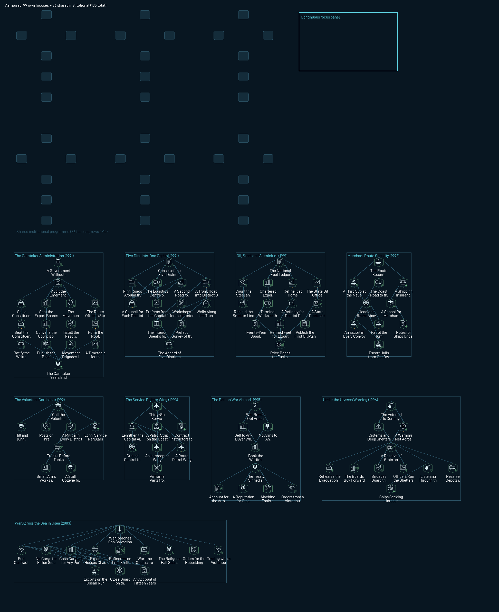
| Branch | Era | Focuses | Filter |
|---|---|---|---|
| The Caretaker Administration | 1991 | 15 | FOCUS_FILTER_POLITICAL |
| Five Districts, One Capital | 1991 | 12 | FOCUS_FILTER_INTERNAL_AFFAIRS |
| Oil, Steel and Aluminium | 1991 | 13 | FOCUS_FILTER_INDUSTRY |
| Merchant Route Security | 1992 | 10 | FOCUS_FILTER_NAVY_XP |
| The Volunteer Garrisons | 1992 | 8 | FOCUS_FILTER_MANPOWER |
| The Service Fighter Wing | 1993 | 8 | FOCUS_FILTER_AIR_XP |
| The Belkan War Abroad | 1995 | 9 | FOCUS_FILTER_WAR_SUPPORT |
| Under the Ulysses Warning | 1996 | 11 | FOCUS_FILTER_STABILITY |
| War Across the Sea in Usea | 2003 | 13 | FOCUS_FILTER_WAR_SUPPORT |
Offices: Cabinet of the Constituent Assembly (democratic / centrism); Council of the Export Boards (neutrality / oligarchism); Directorate of National Resolve (fascism / ultranationalism); Route Security Command Council (neutrality / stratocracy)
The National Administration meets in the capital centre with an agenda its members have postponed for years. The emergency orders that suspended elections are due for renewal, and for the first time the ministry lawyers will not countersign them without a recorded cabinet vote. Aemurraq is governed by an office that sits under a democratic banner while the democratic camp itself barely registers in any count of public opinion.
Outside, the country has split almost exactly in two. Half answers to a nationalist movement that fills the squares and promises discipline, pride and an end to government by clerks. The other half belongs to a non-aligned establishment of export boards, senior officials and district notables who care more about stable prices than about any creed. Neither half trusts the Administration, and neither has yet found a lawful way to replace it.
The ministers cannot settle the country's future at one sitting. They can decide how the argument will be conducted: in public, with the press in the gallery and the movement's speakers given airtime on the state radio, or inside the ministries, where the export boards already keep their chairs. Whatever they choose will be read as a signal by both halves of the country, and by every foreign buyer of Aemurraqi oil.
Events: A Mandate Nobody Voted For; Five Districts Report; What the Wells Really Pump; A Tanker Overdue; Muster Day in Five Districts; Prices of a Distant War; The Asteroid Will Strike; Queues at the Grain Markets; The Night Ulysses Passed; War Comes to Usea
Sources: Mod provenance: Inherited 1991 state: ruling party democratic with elections_allowed = no (election_frequency 48); popularities neutrality 48, fascism 50, democratic 1, communism 1; stability and war support 0.5; three research slots and tech_mountaineers. The starting leader is the unnamed National Administration office (AEM_ac_government_office, centrism), whose description says its 1991 holder has not been established. The tree never names a holder.; Mod provenance: Geography: 1991 states 160, 433, 451 (capital), 468 and 502, captioned Aemurraq District A, District B, Capital District, District D and District E by the neutral regional labels (canonical regional mapping unestablished); victory points Aemurraq Capital Centre (3496) and Aemurraq Logistics Centre 1330. Terrain counts from map/definition.csv: desert in every district, hills and jungle in 433 and 468, plains in 468. State 468 has 27 provinces, no infrastructure, no buildings and no resources. Naval base and two dockyards in 160. Land neighbours AZB, EHE and SOA computed from map/provinces.bmp. No place outside these captions is named.; Provisional gameplay: World-start calibration the tree builds on: role merchant route security; 7 civilian, 5 military and 2 naval factories; 4 infantry formations (6 battalions); 36 fighters on one air base; 2 coastal escorts; 60 convoys; civilian economy, export focus and volunteer only laws; research priority Physical Sustainment (transport, equipment replacement, affordable service). Fictional fiscal calibration, not canon national accounts.; Official: Date anchor: the IAU announces that the asteroid Ulysses may strike the Earth. Used only as background to the Ulysses branch; no Aemurraqi role is claimed.; Official: Date anchor: the Belkan War breaks out. Used only as the opening of the distant-war branch; Aemurraq takes no part and no Aemurraqi role is claimed.; Official: Date anchor: a treaty is signed in Lumen and the Belkan War ends. Used as the date gate of the treaty focus.; Official: Date anchor: the FCU announces that Ulysses will impact the Earth. Used as the date gate of the Ulysses branch opening; where fragments fall is never stated.; Official: Former top pilots from the Belkan Air Force are hired by various countries and work as aggressor squadrons. Used as the date gate and premise of the contract instructors focus; no individual is named and no hire by Aemurraq is claimed as fact.; Official: Date anchor: Ulysses passes through the Roche limit of the Earth. Used as the date gate of the Roche night event; no damage in Aemurraq is claimed.; Official: Date anchor: Erusea stops taking in refugees. Used as the date gate of the harbour reception focus, framed as a pressure the government expects rather than a recorded arrival.; Official: Erusea invades the neutral country of San Salvacion, seizes Stonehenge and uses its railguns as anti-air batteries. Used as the opening of the Usean war branch.; Official: The FCU establishes the ISAF. Used as the date gate of the fuel contracts focus, which is trade only and changes no faction.; Official: Farbanti falls, the ISAF accepts the Erusean surrender and the Continental War ends. Background only; the outcome focuses read the mod outcome flags instead of assuming this ending.; Mod provenance: Campaign hooks read only, never set: belka_won_belkan_war and belka_lost_belkan_war (events/Belka.txt), ac_ucw_stonehenge_destroyed, ac_ucw_outcome_isaf_victory and ac_ucw_outcome_erusean_victory (common/scripted_effects/ac_ucw.txt). Each reaction is a leaf focus, so no outcome blocks the tree.; Provisional gameplay: All Aemurraqi focuses, ideas, offices, buildings, flags, decisions and events in this spec. No named people; offices are collective and unnamed; no border, core, war, annexation or faction effects; buildings only in the five 1991 states.
101 own focuses, 10 branches, 36 shared institutional focuses, 12 events, 86 ideas, 4 offices.
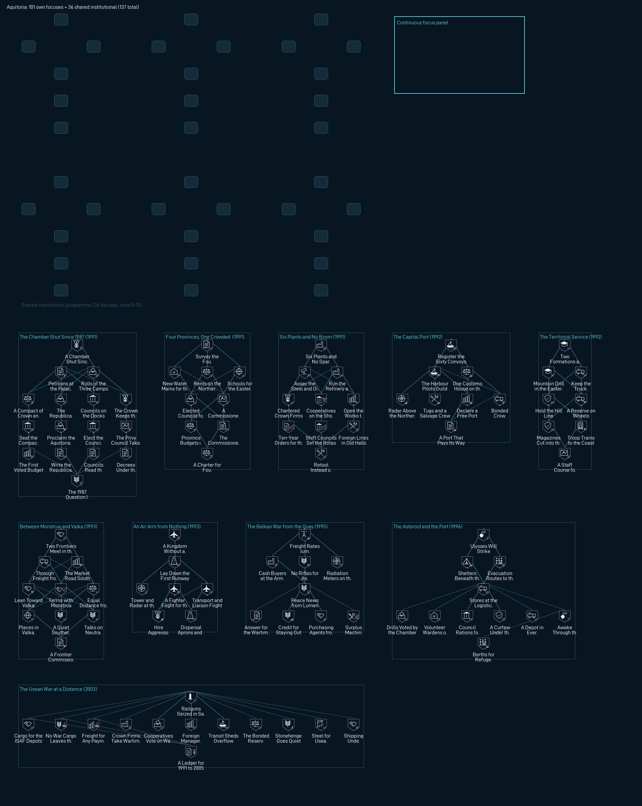
| Branch | Era | Focuses | Filter |
|---|---|---|---|
| The Chamber Shut Since 1987 | 1991 | 16 | FOCUS_FILTER_POLITICAL |
| Four Provinces, One Crowded State | 1991 | 9 | FOCUS_FILTER_INTERNAL_AFFAIRS |
| Six Plants and No Room | 1991 | 10 | FOCUS_FILTER_INDUSTRY |
| The Capital Port | 1992 | 8 | FOCUS_FILTER_NAVY_XP |
| The Territorial Service | 1992 | 8 | FOCUS_FILTER_MANPOWER |
| Between Monstrua and Valka | 1993 | 10 | FOCUS_FILTER_POLITICAL |
| An Air Arm from Nothing | 1993 | 7 | FOCUS_FILTER_AIR_XP |
| The Belkan War from the Quay | 1995 | 9 | FOCUS_FILTER_WAR_SUPPORT |
| The Asteroid and the Port | 1996 | 11 | FOCUS_FILTER_STABILITY |
| The Usean War at a Distance | 2003 | 13 | FOCUS_FILTER_WAR_SUPPORT |
Offices: Ministry of the Crown Compact (monarchism / constitutional_monarchy); Provisional Council of the Republic (democratic / liberalism); Executive of the Councils (communism / democratic_socialism); Privy Council of the Crown (monarchism / absolutism)
The chamber of Aquitoria has not sat since the elections of November 1987. Its doors are locked, its benches lie under dust sheets and the Office of the Crown has governed alone through orders renewed each year by the palace lawyers. This year the lawyers have asked, for the first time, that a council of ministers sign the renewal alongside the crown.
Outside the palace the kingdom is split in a way the old orders never anticipated. Half of the country remains loyal to the crown and expects it to go on governing. The other half is divided almost equally between democrats, who want the chamber reopened and a constitution written, and communists, who want the docks and arms halls run by the people who work in them. A small non-aligned remainder wants only lower prices.
The ministers cannot settle the kingdom's future at a single sitting, but they must decide how the question will be handled. They can renew the orders quietly and let the matter rest another year, invite the three camps to argue it in public, or let the petitioners gathered at the palace gate in for a hearing that will certainly not stay polite.
Events: The Chamber Doors Stay Shut; A Night at the Palace Gate; Four Provinces Report; Six Plants Counted; The Quay Stops Work; Muster Day for Four Battalions; Notes from Two Capitals; Should the Kingdom Fly?; The War Reaches the Freight Market; The Announcement Reaches the Quay; A Long Night on the Radio; War in Usea, Prices on the Quay
Sources: Mod provenance: Inherited 1991 state: ruling party monarchism; last_election 1987.11.9, election_frequency 48, elections_allowed = no; popularities monarchism 50, democratic 21, communism 21, neutrality 8; stability and war support 0.5; three research slots; tech_mountaineers, early_fighter and basic_train among the starting technologies. The starting leader is the unnamed Office of the Crown (AQU_ac_government_office, constitutional_monarchy), whose description says its 1991 holder has not been established. Party names: Kingdom of Aquitoria (monarchism, neutrality, fascism), Aquitorian Republic (democratic), Aquitorian Commune (communism). The tree never names a holder.; Mod provenance: Geography: one 1991 state, 435 (capital, state_category city, six shared slots), captioned Aquitoria. Provinces: 2238 coastal plains with naval base 1, a supply node and victory point 20 (its localised name carries a non-ASCII letter, so the tree calls it the capital port); 8331 coastal plains; 8435 plains with a supply node and victory point 5, captioned Aquitoria Logistics Centre 8435; 5806 hills. A level-2 railway joins 2238 and 8435 only. Buildings: infrastructure 5 (the cap), 3 industrial complexes and 3 arms factories (all six shared slots used), no air base, dockyard or fuel silo. Resources oil 4, steel 5, rubber 2. Land neighbours MST (via 784, 1428, 8526) and VLK (via 1637, 4257, 8243) computed from map/provinces.bmp; sea province 10722 off 2238 and 8331. Compass words come from province centroids. No place outside these captions is named.; Mod provenance: Neighbours as inherited: Monstrua ruled by its fascism party with 90 percent popularity and elections suspended; Valka ruled by its democratic party with neutrality 48 and fascism 50 percent popularity and elections suspended. The tree describes them only through these figures and never changes their borders, cores or factions.; Provisional gameplay: World-start calibration the tree builds on: role small territorial service; 3 civilian and 3 military factories, no dockyard; 2 infantry formations (4 battalions); stocks of 800 infantry equipment, 560 motorized equipment and 24 trains; 60 convoys; combat air and combat navy deliberately absent; infantry-only service without engineer or artillery companies; research priority Physical Sustainment. Fiscal calibration GDP 72 billion, debt ratio 0.3, collection 0.85, growth 3.0, inflation 2.0; crown_office institution, capacity 40. Fictional gameplay calibration, not canon national accounts.; Official: Date anchor: the IAU announces that the asteroid Ulysses may strike the Earth. Background to the asteroid branch only; no Aquitorian role is claimed.; Official: Date anchor: the Belkan War breaks out. Used as the date gate of the distant-war branch; Aquitoria takes no part.; Official: The Belkan Army uses seven nuclear devices in the Waldreich Mountains. Background to the radiation watch focus, which also reads the mod flag belka_dropped_nukes; no effect on Aquitoria is claimed.; Official: Date anchor: a treaty is signed in Lumen and the Belkan War ends. Used as the date gate of the peace focus.; Official: Date anchor: the FCU announces that Ulysses will impact the Earth. Used as the date gate of the asteroid branch; where fragments fall is never stated.; Official: Former top pilots from the Belkan Air Force are hired by various countries and work as aggressor squadrons. Date gate and premise of the aggressor instructors focus; no individual is named and no Aquitorian hire is claimed as fact.; Official: Date anchor: Ulysses passes through the Roche limit of the Earth. Date gate of the Roche night focus and event; no damage in Aquitoria is claimed.; Official: Date anchor: Erusea stops taking in refugees. Date gate of the refugee berths focus, framed as an expected pressure rather than a recorded arrival.; Official: Erusea invades the neutral country of San Salvacion, seizes Stonehenge and uses its railguns as anti-air batteries. Opening of the Usean war branch.; Official: The FCU establishes the ISAF. Date gate of the ISAF cargo focus, which is trade only and changes no faction.; Official: Farbanti falls, the ISAF accepts the Erusean surrender and the Continental War ends. Background only; the outcome focuses read the mod outcome flags instead of assuming this ending.; Mod provenance: Campaign hooks read only, never set: belka_won_belkan_war, belka_lost_belkan_war and belka_dropped_nukes (events/Belka.txt); ac_ucw_stonehenge_destroyed, ac_ucw_outcome_isaf_victory and ac_ucw_outcome_erusean_victory (common/scripted_effects/ac_ucw.txt). Each reaction is a leaf focus, so no outcome blocks the tree.; Provisional gameplay: All Aquitorian focuses, ideas, offices, buildings, flags, decisions and events in this spec. No named people; offices are collective and unnamed; no border, core, war, annexation or faction effects; buildings only in state 435 (air base and radar, the only free capacity there).
140 own focuses, 14 branches, 36 shared institutional focuses, 15 events, 75 ideas, 4 offices.
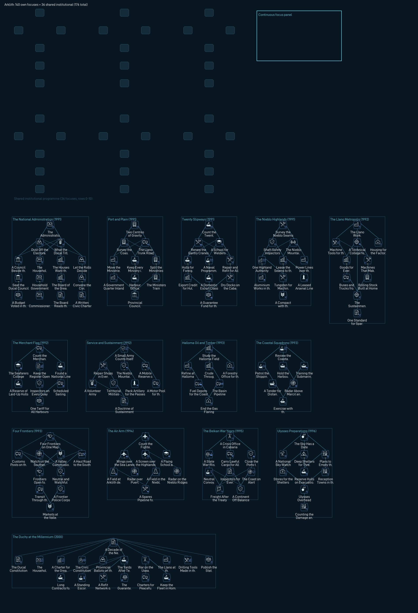
| Branch | Era | Focuses | Filter |
|---|---|---|---|
| The National Administration | 1991 | 15 | FOCUS_FILTER_POLITICAL |
| Port and Plain | 1991 | 10 | FOCUS_FILTER_INTERNAL_AFFAIRS |
| Twenty Slipways | 1991 | 10 | FOCUS_FILTER_INDUSTRY |
| The Nieblo Highlands | 1991 | 10 | FOCUS_FILTER_INDUSTRY |
| The Llano Metropolis | 1992 | 10 | FOCUS_FILTER_RESEARCH |
| The Merchant Flag | 1992 | 8 | FOCUS_FILTER_STABILITY |
| Service and Sustainment | 1992 | 9 | FOCUS_FILTER_MANPOWER |
| Halloma Oil and Timber | 1993 | 7 | FOCUS_FILTER_INDUSTRY |
| The Coastal Squadrons | 1993 | 7 | FOCUS_FILTER_NAVY_XP |
| Four Frontiers | 1993 | 10 | FOCUS_FILTER_POLITICAL |
| The Air Arm | 1994 | 9 | FOCUS_FILTER_AIR_XP |
| The Belkan War Years | 1995 | 9 | FOCUS_FILTER_WAR_SUPPORT |
| Ulysses Preparations | 1996 | 9 | FOCUS_FILTER_STABILITY |
| The Duchy at the Millennium | 2000 | 17 | FOCUS_FILTER_POLITICAL |
Offices: Ducal Council of Ministers (monarchism / constitutional_monarchy); Household Cabinet of the Duchy (monarchism / absolutism); Board of the Great Houses (neutrality / oligarchism); Executive Committee of the Civic Assembly (democratic / social_democracy)
The National Administration has governed Arklith since the vote of 1990, and it has done so competently enough that few people ask by what right. The ministries in Cabaria run, the yards launch their hulls and the Llano factories keep their shifts. Yet the Duchy has no election on its calendar, and the administration's own lawyers concede that its mandate rests more on habit than on any written grant.
Publishing the administration's powers has brought every faction into the open. Loyalists of the ducal house, still about a third of the country by the old measures, want the title to mean something again, either beside a council of ministers or above it. The owners of the yards, shipping lines and Nieblo mines want a board that runs the state the way they run their companies. A smaller but organised camp in the Llano and the port unions wants an elected assembly and nothing else.
Nothing has been decided yet. What the administration chooses today is how the argument will be held: openly, with the press and the provinces watching, or quietly in the corridors of Cabaria, where the great houses and the ducal household already have friends. Either choice will be remembered by the camp it disappoints.
Events: Who Governs the Duchy; Port and Plain; The Order Book; Under Whose Flag; The Highland Ledger; The Works Council Meets; The Army Counts Its Rifles; Four Frontiers; War Beyond Perbla; The Insurers Raise the Rates; A Date in the Sky; Ulysses Overhead; Ten Years On; A Buyer Walks Away; Freight for a Distant War
Sources: Mod provenance: Inherited Arklith state: ruling party neutrality with popularities neutrality 45, monarchism 35, democratic 15, communism 5; last election 1990.1.1 and elections_allowed = no; stability 0.81 and war support 0.07; three research slots; grand doctrines superior_firepower, fleet_in_being and operational_integrity; coastal escort and coastal submarine variants; 260 convoys; tech_mountaineers; starting office ARK_ac_government_office, localised National Administration; country names Duchy of Arklith (democratic and neutrality); research focus Physical Sustainment. The tree never removes or edits these.; Mod provenance: Geography: 1991 states 37 Halloma Basin, 140 Arklith del Sur, 222 Cabar Mountains, 241 Llano de Arklith (metropolis, seven industrial complexes, victory point Arklith), 252 Eastern Nieblo, 398 Cabaria (capital; Puerto Tranquilidad and Cabarion), 605 Arklith del Norte and 609 Nieblo Mountains; Marcil and Leonim in 140. Twenty dockyard levels split five each across 140, 222, 398 and 605; six of eight arms factories in 252 and 609; oil 31 in 37; aluminium and tungsten in 252 and 609; chromium in 222 and 398. Land neighbours PBL (via 37, 222, 252), LEA (via 241, 252, 609), DAK (via 252) and GIB (via 140, 241), computed from map/provinces.bmp. Heavy-rain weather from strategic region 122. Place names only from existing state and victory point localisation.; Mod provenance: Neighbour context only: Perbla tree names Arklith on its western frontier and Arklith traders asking for lower tariffs (PBL_wd_after_arklith_roads); Perbla holds historical_friends ties to Belka. Leasath 1991 popularities democratic ruling with fascism at 50; the Gibraltar Mining Zone is a neutrality administration. No Arklith role in any neighbour affair is claimed.; Official: Date anchor: the IAU warns that the asteroid Ulysses may strike the Earth.; Official: Date anchor: the Belkan War breaks out. No Arklith role is claimed.; Official: Date anchor: a treaty signed in Lumen ends the Belkan War.; Official: Date anchor: the FCU announces that Ulysses will impact the Earth.; Official: Date anchor: Ulysses passes through the Roche limit.; Official: Date anchor: the FCU establishes the ISAF; the Usean Continental War follows. No Arklith role.; Provisional gameplay: All Arklith focuses, ideas, offices, decisions, buildings, flags and events in this spec. No named people; offices are collective and unnamed; no border, core, war, annexation or faction effects; no new place names.
113 own focuses, 10 branches, 36 shared institutional focuses, 12 events, 71 ideas, 3 offices.
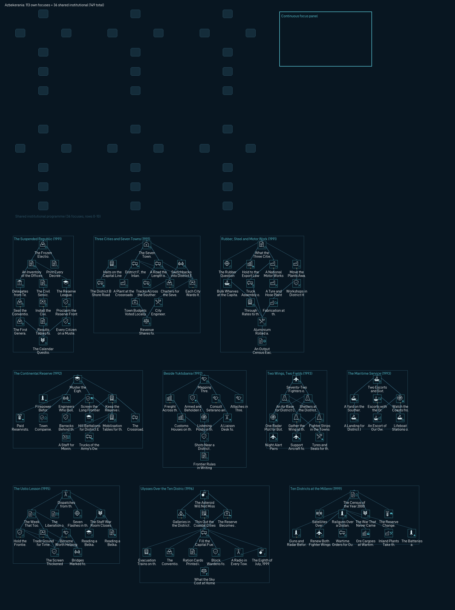
| Branch | Era | Focuses | Filter |
|---|---|---|---|
| The Suspended Republic | 1991 | 13 | FOCUS_FILTER_POLITICAL |
| Three Cities and Seven Towns | 1991 | 13 | FOCUS_FILTER_INTERNAL_AFFAIRS |
| Rubber, Steel and Motor Works | 1991 | 13 | FOCUS_FILTER_INDUSTRY |
| The Continental Reserve | 1992 | 13 | FOCUS_FILTER_MANPOWER |
| Beside Yuktobania | 1992 | 10 | FOCUS_FILTER_POLITICAL |
| Two Wings, Two Fields | 1993 | 9 | FOCUS_FILTER_AIR_XP |
| The Maritime Service | 1993 | 7 | FOCUS_FILTER_NAVY_XP |
| The Ustio Lesson | 1995 | 12 | FOCUS_FILTER_WAR_SUPPORT |
| Ulysses Over the Ten Districts | 1996 | 12 | FOCUS_FILTER_STABILITY |
| Ten Districts at the Millennium | 1999 | 11 | FOCUS_FILTER_RESEARCH |
Offices: Cabinet of the Ten-District Convention (democratic / social_democracy); Directorate of the Permanent Secretaries (neutrality / centrism_na); Council of the Reserve Front (fascism / stratocracy_fascism)
The statute book of the Republic of Azbekerania still prints a general ballot every forty-eight months, with dates, polling rules and the duties of district returning officers set out in full. None of it has been used under the present suspension. The National Administration governs under the democratic banner, but when the interior ministry quietly polls the districts, the democrats register at one voter in a hundred.
The rest of the country has sorted itself into two blocs of nearly equal size. One is the reservists' leagues: former soldiers of the eight formations, their families and the towns that send them, who want the state run like a mobilisation table. The other is the civil establishment of the three industrial cities, career officials and district notables who belong to no party and distrust anyone who does. Each bloc believes the suspension favours the other.
The Administration cannot answer the calendar question in a single sitting. It can choose who gets to argue about it first. A public hearing gives the leagues a stage and the establishment a grievance. A ministerial review keeps both out of the room. Inviting both to a round table satisfies neither, but it keeps them talking rather than marching.
Events: An Election Nobody May Hold; The Seven Towns Report; Three Cities, One Set of Books; Eight Formations on the Road; A Map with Three Frontiers; Shots in the Dark in District D; The Inquiry Reports; The Staff Opens a War Room; Ten Districts Ask What to Do; A Rumour on the Coast; A Night with the Trucks Running; What the Railguns Teach
Sources: Mod provenance: Inherited 1991 state: ruling party democratic with elections_allowed = no (election_frequency 48); popularities neutrality 48, fascism 50, democratic 1, communism 1; stability and war support 0.5; three research slots; technology including tech_mountaineers, tech_engineers, early_fighter and basic_train; grand doctrines superior_firepower, fleet_in_being and operational_integrity. The starting leader is the unnamed National Administration office (AZB_ac_government_office), whose description says its 1991 holder has not been established. The tree never names a holder. Country names by ideology (Republic of Azbekerania and others) are inherited and unchanged.; Mod provenance: Geography: 1991 states 347, 387, 407, 417, 421, 434, 452 (capital), 473, 477 and 493, captioned Azbekerania District A, B, C, D, E, F, Capital District, H, I and J by the neutral regional labels (canonical regional mapping unestablished). Victory points Azbekerania Capital Centre (2565), Logistics Centre 3101 (District A) and Logistics Centre 1750 (District C). Districts A, C and the Capital District are cities, each with four civilian and two military factories and oil, aluminium, rubber and steel; the other seven are towns with no buildings, infrastructure or resources. The capital holds the naval base, two dockyards and the fuel silo. Terrain from map/definition.csv: forest and hills in A, plains in B, C, D, F, I and the Capital District, hills and one mountain province in E, hills and desert in H, desert in J; coastal districts B, C, Capital, I and J; District I has eleven provinces. Land neighbours computed from map/provinces.bmp: Yuktobania (Districts A, C, D, E and I), Seterano (A and B) and Aemurraq (Capital District, H and J); District F alone touches no frontier and no sea. The only railway (map/railways.txt) runs Capital District - District D - District C - District A. No place outside these captions is named.; Provisional gameplay: World-start calibration the tree builds on: role continental reserve; 12 civilian, 6 military and 2 naval factories; eight infantry formations of six battalions and an engineer company, based at the capital and the two logistics centres; 72 fighters and 12 support aircraft split between the capital and District A; two coastal escorts in the Maritime Service; 60 convoys; civilian economy, export focus and volunteer only laws; research priority Physical Sustainment (transport, equipment replacement, affordable service); political institution civil_administration, capacity 40. Fictional calibration, not canon national accounts or order of battle.; Mod provenance: Neighbour consistency: Aemurraq (tools/world_depth/aem/content.py) records land frontiers with Azbekerania, Echea and Sotoa and posts on its own side. This tree only builds and governs on the Azbekeranian side, offers consultations whose acceptance it never assumes, and claims no Aemurraqi action or outcome.; Official: Date anchor: the IAU announces that the asteroid Ulysses may pass close to the Earth with a chance of impact. Background to the Ulysses branch only.; Official: Date anchor: the Belkan War breaks out. Opens the Belkan War branch; Azbekerania takes no part.; Official: Nearly all of the Republic of Ustio falls under Belkan control. Used as the date gate and premise of the staff study focus; no Azbekeranian involvement is claimed.; Official: Ustio enters an alliance with Osea and begins its resistance. Date gate of the outside-help lesson; no alliance is created for Azbekerania.; Official: The Allied Forces liberate Ustio's capital Directus. Date gate of the liberation study focus.; Official: The Belkan Army uses seven nuclear devices in the Waldreich Mountains. Background to the fallout focus, which also reads the mod flag belka_dropped_nukes; no fallout in Azbekerania is claimed.; Official: A treaty is signed in Lumen and the Belkan War ends. Date gate of the treaty focus.; Official: The FCU announces that Ulysses will impact the Earth. Date gate of the Ulysses branch; where fragments fall is never stated.; Official: Ulysses passes through the Roche limit of the Earth. Date gate of the Roche night focus and event; no damage in Azbekerania is claimed.; Official: Osea and Yuktobania cooperate to convert the Arkbird into a platform for clearing debris from satellite orbits. Background to the satellite focus, which reads the mod flag ac_sp_arkbird_complete; no Azbekeranian role is claimed.; Official: Erusea invades the neutral country of San Salvacion, seizes Stonehenge and uses its railguns as anti-air batteries. Background to the air-defence study, which reads the mod flag ac_ucw_war_started.; Mod provenance: Campaign hooks read only, never set: belka_won_belkan_war, belka_lost_belkan_war and belka_dropped_nukes (events/Belka.txt); ac_sp_arkbird_complete (common/scripted_effects/ac_special_projects.txt); ac_ucw_war_started, ac_ucw_war_averted and ac_ucw_stonehenge_destroyed (common/scripted_effects/ac_ucw.txt). Each reaction is a leaf focus or a side line, so no outcome blocks the closing focus.; Provisional gameplay: All Azbekeranian focuses, ideas, offices, buildings, flags, decisions and events in this spec, including the framing of the fascist half of opinion as reservists' leagues and the neutral half as the non-party civil establishment. No named people; offices are collective and unnamed; no border, core, war, annexation or faction effects; buildings only in the ten 1991 states.
107 own focuses, 11 branches, 36 shared institutional focuses, 12 events, 90 ideas, 3 offices.

| Branch | Era | Focuses | Filter |
|---|---|---|---|
| The November Ballot | 1991 | 14 | FOCUS_FILTER_POLITICAL |
| Silvius on Its Hill | 1991 | 9 | FOCUS_FILTER_INTERNAL_AFFAIRS |
| The Arsenal Works | 1991 | 13 | FOCUS_FILTER_INDUSTRY |
| Steel, Oil and Rubber | 1992 | 7 | FOCUS_FILTER_RESEARCH |
| The Harbour on the Cold Coast | 1991 | 8 | FOCUS_FILTER_NAVY_XP |
| The Territorial Service | 1992 | 12 | FOCUS_FILTER_ARMY_XP |
| One Airfield, No Squadron | 1993 | 9 | FOCUS_FILTER_AIR_XP |
| Three Neighbours and the Sea | 1992 | 9 | FOCUS_FILTER_POLITICAL |
| A War Across the World | 1995 | 8 | FOCUS_FILTER_WAR_SUPPORT |
| Ulysses Over the Cold Coast | 1996 | 7 | FOCUS_FILTER_STABILITY |
| The Turn of the Century | 2000 | 11 | FOCUS_FILTER_POLITICAL |
Offices: Cabinet of the Elected Chamber (democratic / liberalism); Board of the National Works (neutrality / oligarchism); Council of Territorial Defence (neutrality / stratocracy)
In November 1991 the mandate from the ballot of 1987 runs out, and Baltica votes. Polling stations open in schools and works canteens across the five provinces, with ploughs out on the roads because the first snow has already fallen on the plain. The National Administration that has governed under the democratic banner will not survive the count in its present form, and everyone in Silvius knows it.
Seven voters in ten support the democratic parties, which agree that ministers should answer to the chamber and disagree about almost everything else. Most of the rest follow a non-aligned establishment of works directors, harbour owners and senior officers who distrust coalitions and prefer competence to debate. Nearly every family has someone on the reserve list or the works payroll, and both groups expect the next government to remember them.
Before any answer is chosen, the Administration must settle how the result will be received. It can publish the count from every polling station by the next morning, inviting challenges and recounts, or certify the national result first and release the local figures once a government has been formed. The four years that follow begin with this choice.
Events: The November Ballot; A Register Taken in Winter; What the Works Really Cost; Silence at the Works Gates; The Harbour Freezes Early; A Muster in January; Three Frontiers and a Coast; The Empty Hangars; A War Beyond the Horizon; Ulysses Will Fall; The Long July Night; Charters Toward Usea
Sources: Mod provenance: Inherited 1991 politics: ruling_party democratic with elections_allowed = yes, election_frequency 48 and last_election 1987.11.9, so the next ballot falls due in November 1991; popularities democratic 70, neutrality 28, fascism 1, communism 1; stability 0.5 and war support 0.70; three research slots including tech_mountaineers and early_fighter. The starting leader is the unnamed National Administration office (BAL_ac_government_office, centrism), whose 1991 holder has not been established. The tree never names a holder.; Mod provenance: Country names per party: Baltican Republic (democratic and neutrality), Baltican Union (communism), Baltican State (fascism), Grand Duchy of Baltica (monarchism); adjective Baltican. The three political answers all keep the Republic names; no union, state or grand duchy path is offered.; Mod provenance: Geography: one 1991 state, 321 (capital), captioned Baltica, category large_town with five shared slots all filled (3 arms, 2 civilian); infrastructure 3, air base 1, a naval base in coastal province 1628 and a supply node and victory point Silvius (value 20) in province 797. Terrain from map/definition.csv: hills (797), plains (1235, 1628, 4771; the last two coastal) and forest (3679). One level-2 railway runs 797-1235-1628. Land neighbours, computed from map/provinces.bmp: YUK (states 216 and 274) along 797, 1235 and 4771; MAY (328) along 1628 and 3679; SET (356, mountain provinces) along 797. Sea frontage on 1628 and 4771. Strategic region 236 has winters well below freezing with snow and blizzards. Neighbour state names and captions are not used as place names; no place other than Silvius is named.; Provisional gameplay: World-start calibration the tree builds on: role small territorial service; 2 civilian, 3 military and 0 naval factories; two infantry formations (four battalions), infantry-only civil defence with combat aviation and combat navy deliberately absent; stocks of 800 infantry equipment, 560 motorized equipment and 24 trains; 60 convoys; oil 4, rubber 2, steel 6; research priority Physical Sustainment (transport, equipment replacement, affordable service). Fiscal figures are fictional calibration, not canon national accounts.; Mod provenance: Neighbour context only: Yuktobania starts 1991 with communism ruling at 70 percent popularity and about seventy states; Malynea and Seterano start with democratic ruling parties and three and five states. No neighbour response to any Baltican policy is asserted; Baltican offers are unilateral.; Official: Date anchor: Scinfaxi-class submarines are announced at a political convention in Cinigrad, Yuktobania. Used only for the coast watch leaf, which also requires the mod global flag ac_bwr_cinigrad; no Baltican role is claimed.; Official: Date anchor: the IAU announces that Ulysses may strike the Earth. Background to the asteroid branch.; Official: Date anchor: the Belkan War breaks out. Opening of the distant-war branch; Baltica takes no part.; Official: Nearly all of Ustio falls under Belkan control. Cited only as the example a Baltican staff study reads; no Baltican role is claimed.; Official: Date anchor: a treaty is signed in Lumen and the Belkan War ends. Date gate of the treaty focus.; Official: Date anchor: the FCU announces that Ulysses will impact the Earth. Date gate of the asteroid branch opening; where fragments fall is never stated.; Official: Date anchor: Ulysses passes through the Roche limit of the Earth. Date gate of the Roche night focus; no damage in Baltica is claimed.; Official: Osea and Yuktobania cooperate to convert the Arkbird into a debris-clearing platform. Date gate and premise of the thaw focus; no Baltican role is claimed.; Official: Erusea invades the neutral country of San Salvacion and seizes Stonehenge. Background to the Usean war focus, which also requires the mod global flag ac_ucw_war_started.; Mod provenance: Campaign hooks read only, never set: ac_bwr_cinigrad (common/scripted_effects/ac_belkan_record.txt); belka_won_belkan_war and belka_lost_belkan_war (events/Belka.txt); ac_ucw_war_started, ac_ucw_war_averted, ac_ucw_outcome_isaf_victory and ac_ucw_outcome_erusean_victory (common/scripted_effects/ac_ucw.txt). Each reaction is a leaf focus, so no outcome blocks the tree.; Provisional gameplay: All Baltican focuses, ideas, offices, buildings, flags, decisions and events in this spec. No named people; offices are collective and unnamed; no border, core, war, annexation or faction effects; buildings only in state 321, which has no free shared slot, so only infrastructure, air base and radar levels are added.
98 own focuses, 9 branches, 36 shared institutional focuses, 12 events, 72 ideas, 4 offices.

| Branch | Era | Focuses | Filter |
|---|---|---|---|
| The Suspended Ballot | 1991 | 16 | FOCUS_FILTER_POLITICAL |
| Brunies Steel and Tungsten | 1991 | 11 | FOCUS_FILTER_INDUSTRY |
| Keep the Columns Moving | 1991 | 10 | FOCUS_FILTER_MANPOWER |
| Claims and Crossings | 1992 | 10 | FOCUS_FILTER_POLITICAL |
| Bell Town and Oderin | 1992 | 10 | FOCUS_FILTER_INTERNAL_AFFAIRS |
| The Air Defence Wing | 1993 | 10 | FOCUS_FILTER_AIR_XP |
| War in the North | 1995 | 9 | FOCUS_FILTER_WAR_SUPPORT |
| Under Ulysses | 1996 | 9 | FOCUS_FILTER_STABILITY |
| The Republic at the Century | 2000 | 13 | FOCUS_FILTER_POLITICAL |
Offices: Cabinet of the Restored Republic (democratic / liberalism); Council of State of the Presidency (democratic / conservatism); Federal Committee of the Works Councils (communism / democratic_socialism); Directorate of Marshals (neutrality / stratocracy)
The decree is short and the reaction is long. Dakrain voted on the first day of 1991, the democratic parties took nearly half the count and the left bloc close to a third, and no further ballot now stands on the calendar. The presidency, held by an officer with a marshal's rank, governs a stable country with a conservative cabinet, and it has published the terms on which the suspension rests.
Publishing them has brought every camp into the open. Liberal deputies and the port newspapers want the polling stations reopened within the year. The conservative majority prefers a council of state with a programme and no campaign. The left bloc, strong in the Brunies mills and on the Bell Town docks, speaks of councils instead of ministries. A circle of senior commanders says little in public and a great deal in the officers' mess.
Nothing is settled today. What the presidency decides now is how the argument will be held: in the chamber and the press, where every faction can be heard and every promise is recorded, or inside the ministries and barracks of Brunies, where decisions come faster and grudges last longer. Whichever way it goes, the camp left outside will remember who closed the door.
Events: The Ballot in the Drawer; Lines Drawn by Others; The Furnace Count; Two Harbour Councils; The Wing on Parade; Columns in the Mud; War Beyond the Northern Horizon; Gatewood Answers; A Date for the Asteroid; The Night of the Fragments; The Panel Drawn by Lot; Rates for a Distant War
Sources: Mod provenance: Inherited Dakrain state: ruling party democratic with popularities democratic 48, communism 32, monarchism 10, neutrality 10 and fascism 0; last_election 1991.1.1, election_frequency 48 and elections_allowed = no; stability 0.8 and war support 0.5; three research slots; tech_mountaineers, infantry_at and infantry_manpats; country names Republic of Dakrain (democratic and neutrality), Dakrainian SSR, Dakrainian State and Principality of Dakrain. The tree never removes or edits these.; Mod provenance: Inherited leader DAK_malis_tacal, a country_leader with ideology conservatism whose name field carries a presidential title with a marshal rank. The tree neither names nor removes the character; every new government is an unnamed collective office reached through a Regime focus.; Mod provenance: Geography: 1991 states 114 Trent (city; victory point Oderin with naval base 2; two arms factories, two industrial complexes, one dockyard, infrastructure 3, one air base) and 234 Brunies (capital; large city; victory points West Trent and Bell Town, naval base 5 at Bell Town; steel 16 and tungsten 9; three arms factories, two industrial complexes, one dockyard, a fuel silo, infrastructure 4, five air bases). Claims: PBL and TER claim 114 and 234; DAK claims 209 North Dakrain (victory point Karluga) and 571 Terentio Desert, both owned by PBL with TER cores. Land neighbours PBL (via 209 and 571), ARK (via 252 Eastern Nieblo) and LEA (via 70), computed from map/provinces.bmp; both states are coastal plains with urban centres. Warm, wet weather with heavy rain and mud from strategic region 39. The supply-hub captions in ac_world_start_hubs are placeholders and are never used as place names.; Mod provenance: World start: role small coastal and air defense; 4 civilian, 5 military and 2 dockyards; four infantry formations, 24 fighters, one destroyer and 60 convoys; DAK Service Fighter and DAK Coastal Escort variants; stocks of 960 infantry, 720 motorized, 24 train and 192 support equipment; research priority Physical Sustainment (transport, equipment replacement and affordable service capacity).; Mod provenance: Neighbour consistency: the Perbla tree acknowledges the Dakrain dispute over the Terentio frontier with a joint commission on crossings, wells and customs and no border effect (PBL_wd_lands_dakrain_commission); the Arklith tree holds a valley commission and seasonal markets at the Dakrain crossings (ARK_wd_fro_dakrain_valley, ARK_wd_fro_valley_markets). Perbla holds historical_friends ties to Belka. This tree opens matching Dakrainian desks and never assumes which neighbour focuses were taken or what Perbla does in the Belkan War.; Mod provenance: Campaign hooks read only outcomes the mod already records: belka_won_belkan_war and belka_lost_belkan_war, set by the Belkan War events, and ac_ucw_war_started, set by the Usean Continental War effects. Each is a separate gameplay branch; none is asserted as history.; Official: Date anchor only: the IAU warns that the asteroid Ulysses may strike the Earth.; Official: Date anchor only: the Belkan War breaks out. No Dakrainian role is claimed.; Official: Date anchor only: the FCU announces that Ulysses will strike the Earth.; Official: Date anchor only: former Belkan Air Force pilots are hired abroad as aggressor squadrons. No Dakrainian contract is claimed.; Official: Date anchor only: Ulysses passes through the Roche limit. No fragment fall in Dakrain is claimed.; Official: Date anchor only: the FCU establishes the ISAF and the Usean Continental War follows. No Dakrainian role is claimed.; Provisional gameplay: All Dakrainian focuses, ideas, offices, decisions, buildings, flags and events in this spec. No named people; offices are collective and unnamed; claims stay claims, with no border, core, war, annexation or faction effects; no new place names.
97 own focuses, 10 branches, 36 shared institutional focuses, 12 events, 70 ideas, 3 offices.
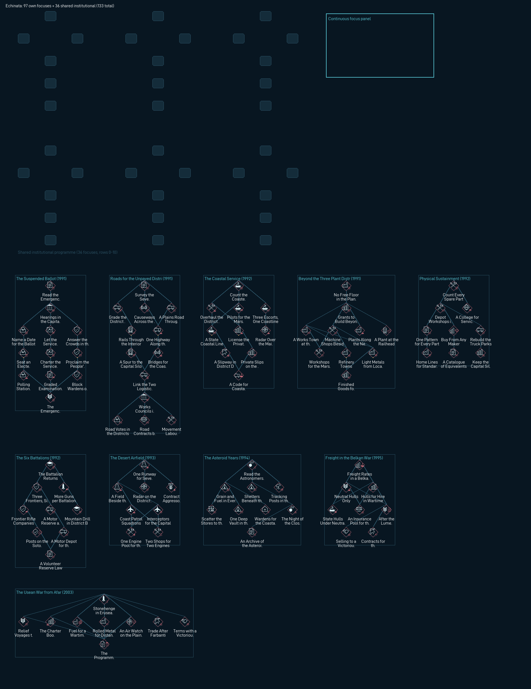
| Branch | Era | Focuses | Filter |
|---|---|---|---|
| The Suspended Ballot | 1991 | 12 | FOCUS_FILTER_POLITICAL |
| Roads for the Unpaved Districts | 1991 | 13 | FOCUS_FILTER_INTERNAL_AFFAIRS |
| The Coastal Service | 1992 | 10 | FOCUS_FILTER_NAVY_XP |
| Beyond the Three Plant Districts | 1991 | 10 | FOCUS_FILTER_INDUSTRY |
| Physical Sustainment | 1992 | 9 | FOCUS_FILTER_RESEARCH |
| The Six Battalions | 1992 | 9 | FOCUS_FILTER_MANPOWER |
| The Desert Airfield | 1993 | 8 | FOCUS_FILTER_AIR_XP |
| The Asteroid Years | 1994 | 9 | FOCUS_FILTER_STABILITY |
| Freight in the Belkan War | 1995 | 8 | FOCUS_FILTER_WAR_SUPPORT |
| The Usean War from Afar | 2003 | 9 | FOCUS_FILTER_WAR_SUPPORT |
Offices: Elected Council of Ministers (democratic / liberalism); Board of the National Services (neutrality / centrism_na); Executive of the People's State (fascism / ultranationalism)
The National Administration convenes in the capital centre to hear its own emergency orders read into the record. The orders were drafted in haste to suspend elections for what was meant to be a short season, and they have been renewed quietly ever since. Few ministers have read them in full. The clerk takes most of the morning, and the public gallery fills as word spreads through the city.
Outside the hall the country is split almost evenly. The national movement holds the squares and claims half of every opinion count; the non-aligned establishment of service chiefs, depot managers and harbour boards claims most of the rest. The democratic club that lent the Administration its label could fit its members in the gallery. Each camp hears in the orders what it wants to hear: a lawful pause, a stolen vote or an opportunity.
The Administration cannot settle the country's future in one sitting, but it can decide what happens to the record of this one. Printing the full text will invite every camp to argue it in public. Filing it with the ministries keeps the argument quiet a while longer. Sending copies to the service chiefs and the movement's leaders at once would at least prove that nobody is being kept in the dark.
Events: Orders Nobody Has Read; Crowds in the Public Gallery; Seven District Returns; What the Coasters Carry; No Room on the Plant Floors; The Inventory Comes In; Six Battalions on the Roll; One Runway in the Desert; The Astronomers' Bulletin; The Night of the Pass; Freight Quotes from a Distant War; War News from Usea
Sources: Mod provenance: Inherited 1991 state: ruling party democratic with elections_allowed = no (election_frequency 48); popularities neutrality 48, fascism 50, democratic 1, communism 1; stability and war support 0.5; three research slots and tech_mountaineers. The starting leader is the unnamed National Administration office (ECH_ac_government_office, centrism), whose description says its 1991 holder has not been established. Institution profile civil_administration, capacity 40; party is context, not proof of constitutional form. Country names include the Echinatan Republic and, for the fascism party, the Echinatan People's State. The tree never names a holder.; Mod provenance: Geography: 1991 states 56, 537, 574 (capital), 577, 579, 585 and 586, captioned Echinata District A, District B, Capital District, District D, District E, District F and District G by the neutral regional labels (canonical regional mapping unestablished). Victory points: the capital centre (405) and the logistics centres in District A (474) and District B (1390). Terrain from map/definition.csv: desert capital with no coast; jungle coast in A; plains, hills, mountain and marsh in B; marsh and plain coast in D; plain and jungle coast in E; landlocked plain, hills and mountain in F; plain and hill coast in G. All plants (9 civilian, 6 military) stand in 56, 537 and 574, which have no free shared slots; the two dockyards and the level 3 naval base are in 579; naval bases also in 56 and 577; the only air base and the fuel silo are in 574; 577, 585 and 586 have no infrastructure. Land neighbours CSO (Central Sotoa, via 537, 574 and 585), EHE (Echea, via 537) and SOA (Sotoa, via 574 and 586), computed from map/provinces.bmp. No place outside these captions is named.; Provisional gameplay: World-start calibration the tree builds on: role coastal service capacity; 9 civilian, 6 military and 2 naval factories; 5 infantry formations (6 battalions); 48 fighters and 12 support aircraft on one air base; 3 coastal escorts; 84 convoys; civilian economy, export focus and volunteer only laws; grand doctrines superior firepower, fleet in being and operational integrity; research priority Physical Sustainment (transport, equipment replacement, affordable service). Fictional fiscal calibration, not canon national accounts.; Official: Date anchor: the IAU announces that the asteroid Ulysses will pass close to the Earth with a chance of impact. Used only as the opening of the asteroid branch; no Echinatan role is claimed.; Official: Date anchor: the Belkan War breaks out. Used only as the opening of the freight branch; Echinata takes no part and no Echinatan role is claimed.; Official: Date anchor: a treaty is signed in Lumen and the Belkan War ends. Used as the date gate of the review focus.; Official: Date anchor: the FCU announces that Ulysses will impact the Earth. Used as the date gate of the shelter focus; where fragments fall is never stated.; Official: Former top pilots from the Belkan Air Force are hired by various countries and work as aggressor squadrons. Used as the date gate and premise of the instructor contract focus; no individual is named and no hire by Echinata is claimed as fact.; Official: Date anchor: Ulysses passes through the Roche limit of the Earth. Used as the date gate of the close-pass focus and event; no damage in Echinata is claimed.; Official: Erusea invades the neutral country of San Salvacion, seizes Stonehenge and uses its railguns as anti-air batteries. Used as the opening of the Usean war branch; no Echinatan role is claimed.; Official: Farbanti falls, the ISAF accepts the Erusean surrender and the Continental War ends. Background only; the outcome focuses read the mod outcome flags instead of assuming this ending.; Mod provenance: Campaign hooks read only, never set: belka_won_belkan_war and belka_lost_belkan_war (events/Belka.txt), ac_ucw_outcome_isaf_victory and ac_ucw_outcome_erusean_victory (common/scripted_effects/ac_ucw.txt). Each reaction is a leaf focus, so no outcome blocks the tree.; Provisional gameplay: All Echinatan focuses, ideas, offices, buildings, flags, decisions and events in this spec. No named people; offices are collective and unnamed; no border, core, war, annexation or faction effects; frontier and trade focuses change no claim and commit no forces abroad.
98 own focuses, 9 branches, 36 shared institutional focuses, 11 events, 65 ideas, 3 offices.
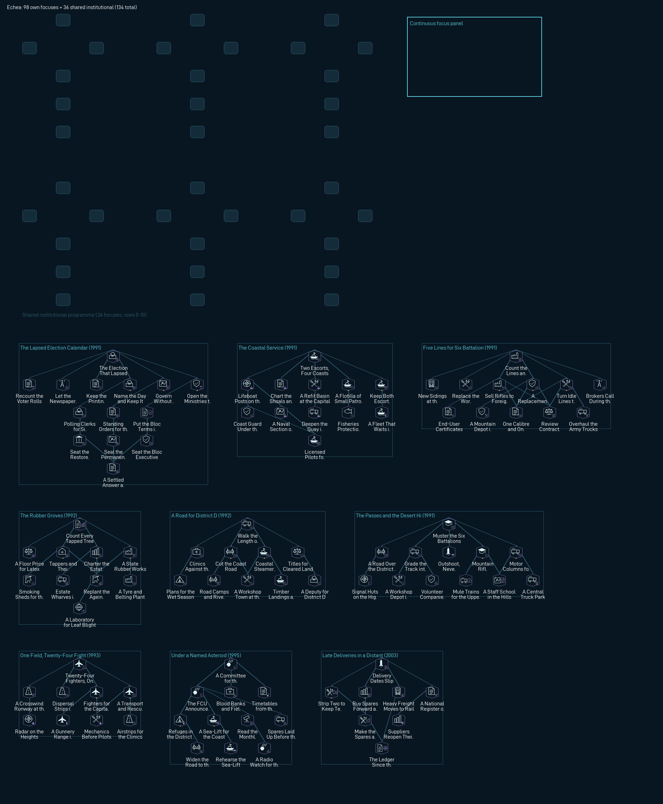
| Branch | Era | Focuses | Filter |
|---|---|---|---|
| The Lapsed Election Calendar | 1991 | 14 | FOCUS_FILTER_POLITICAL |
| The Coastal Service | 1991 | 12 | FOCUS_FILTER_NAVY_XP |
| Five Lines for Six Battalions | 1991 | 12 | FOCUS_FILTER_INDUSTRY |
| The Rubber Groves | 1992 | 10 | FOCUS_FILTER_INDUSTRY |
| A Road for District D | 1992 | 10 | FOCUS_FILTER_INTERNAL_AFFAIRS |
| The Passes and the Desert Hills | 1991 | 12 | FOCUS_FILTER_MANPOWER |
| One Field, Twenty-Four Fighters | 1993 | 9 | FOCUS_FILTER_AIR_XP |
| Under a Named Asteroid | 1995 | 11 | FOCUS_FILTER_STABILITY |
| Late Deliveries in a Distant War | 2003 | 8 | FOCUS_FILTER_WAR_SUPPORT |
Offices: Cabinet of the Restored Calendar (democratic / liberalism); The Permanent Secretariat (neutrality / centrism_na); Executive of the National Bloc (fascism / fascism_ideology)
The date printed in the statute book came and went without a proclamation. No ballots were printed, no polling halls were opened, and the National Administration issued only a short notice saying that the calendar would be reviewed when conditions allowed. Echea has been governed in that conditional tense ever since, by an office that carries the democratic party's name while almost nobody in the country carries its vote.
The arithmetic is the problem. Nearly half the country stands with the non-aligned establishment of officials, port owners, estate families and works managers, who value calm above any creed. The other half, by a whisker more, follows the nationalist bloc, which promises a firmer state and says openly that it would win any honest count. Each side suspects the Administration of planning to cheat the other.
This morning a group of district notables delivered a sealed letter to the capital centre asking for one thing only: a date. They do not say which date, or who should win. Ministers must decide whether to answer in public, where every camp will read the reply and organise around it, or to keep the matter inside the ministries a while longer.
Events: An Election Nobody Scheduled; Petitions from Six Districts; Two Ships and a Long Coast; Half Shifts at the Arms Works; Who Owns the Trees; A District Without a Road; Six Battalions, Two Frontiers; All the Wing on One Runway; The Asteroid Will Strike; Ulysses Inside the Roche Limit; Deliveries Postponed Indefinitely
Sources: Mod provenance: Inherited 1991 state: ruling party democratic with elections_allowed = no (election_frequency 48); popularities neutrality 48, fascism 50, democratic 1, communism 1; stability and war support 0.5; three research slots; tech_mountaineers among the starting technologies; grand doctrines superior_firepower, fleet_in_being and operational_integrity. The starting leader is the unnamed National Administration office (EHE_ac_government_office, centrism), whose description says its 1991 holder has not been established. The tree never names a holder.; Mod provenance: Geography: 1991 states 384, 530 (capital), 531, 543, 546 and 572, captioned Echea District A, Capital District, District C, District D, District E and District F by the neutral regional labels (the capital takes the second letter, so there is no District B; canonical regional mapping unestablished). Terrain counts from map/definition.csv: 25 of 49 provinces jungle (A 8, capital 5, D 10, E 2); mountains in the capital, C, E and F; desert in F (4 of 8) and A (1); coastal provinces in A, the capital, D and E, while C and F are inland. District D has 12 provinces and no infrastructure, buildings or resources; C (3 provinces) and F (8) have neither infrastructure nor buildings. The capital (large_city) holds naval base 3, two dockyards, a fuel silo, an air base, two civilian and two military factories; District A (town) two of each, infrastructure 2 and the supply node of the logistics centre; District E two civilian and one military factory. Rubber, steel, aluminium and oil lie in A, the capital and E. Land neighbours AEM (via A and F), SOA (via C and F), CSO (via C and E) and ECH (via E), computed from map/provinces.bmp. Victory points Echea Capital Centre (5457) and Echea Logistics Centre 2052. No place outside these captions is named.; Provisional gameplay: World-start calibration the tree builds on: role small coastal service; 6 civilian, 5 military and 2 naval factories; 4 infantry formations (6 battalions); 24 fighters on one air base; 2 coastal escorts; 60 convoys; two intersecting rail paths; research priority Physical Sustainment (transport, equipment replacement, affordable service). Fictional fiscal calibration, not canon national accounts.; Official: Date anchor: the IAU announces that the asteroid Ulysses will pass close to the Earth with a chance of impact. Used only as the premise of the impact committee focus; no Echea role is claimed.; Official: Date anchor: the Belkan War breaks out. Used only as the date gate of the arms brokers focus; Echea takes no part and no Echea role is claimed.; Official: Date anchor: the President of the FCU announces that Ulysses will impact the Earth and announces plans to counter it. Used as the date gate of the impact announcement focus; where fragments fall is never stated.; Official: Date anchor: the IAU monthly damage estimate is revised to include possible fragments on the eastern part of the Anean continent. Used as the date gate of the estimate desk focus; Echea is not placed on any continent.; Official: Date anchor: Ulysses passes through the Roche limit of the Earth. Used as the date gate of the Roche limit focus and its event; no damage in Echea is claimed.; Official: Date anchor: Osea, Emmeria and other nations join in economic sanctions against Estovakia. Used as the date gate of the contract review focus; whether Echea is among the other nations is not recorded and not claimed.; Official: Erusea invades the neutral country of San Salvacion, seizes Stonehenge and uses its railguns as anti-air batteries. Used as the opening of the late-deliveries branch, framed only as pressure on imported spare parts.; Mod provenance: Campaign hook read only, never set: ac_ucw_outcome_isaf_victory (common/scripted_effects/ac_ucw.txt). The reaction is a leaf focus, so no outcome blocks the tree.; Provisional gameplay: All Echea focuses, ideas, offices, buildings, flags, decisions and events in this spec. No named people; offices are collective and unnamed; no border, core, war, annexation or faction effects; buildings only in the six 1991 states.
103 own focuses, 10 branches, 36 shared institutional focuses, 12 events, 63 ideas, 4 offices.
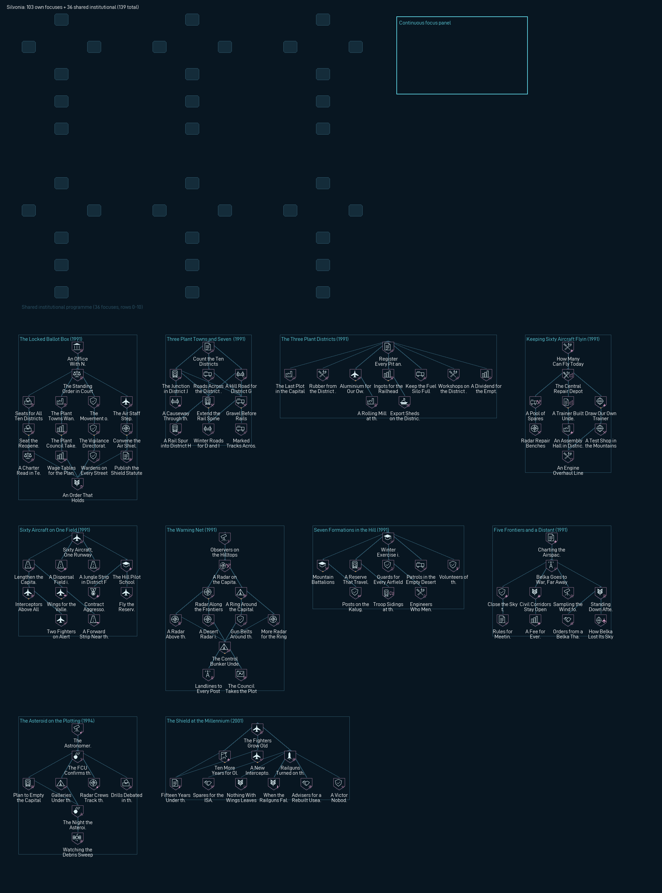
| Branch | Era | Focuses | Filter |
|---|---|---|---|
| The Locked Ballot Box | 1991 | 15 | FOCUS_FILTER_POLITICAL |
| Three Plant Towns and Seven Empty Districts | 1991 | 10 | FOCUS_FILTER_INTERNAL_AFFAIRS |
| The Three Plant Districts | 1991 | 10 | FOCUS_FILTER_INDUSTRY |
| Keeping Sixty Aircraft Flying | 1991 | 9 | FOCUS_FILTER_RESEARCH |
| Sixty Aircraft on One Field | 1991 | 11 | FOCUS_FILTER_AIR_XP |
| The Warning Net | 1991 | 11 | FOCUS_FILTER_AIR_XP |
| Seven Formations in the Hills | 1991 | 9 | FOCUS_FILTER_ARMY_XP |
| Five Frontiers and a Distant War | 1991 | 10 | FOCUS_FILTER_WAR_SUPPORT |
| The Asteroid on the Plotting Table | 1994 | 8 | FOCUS_FILTER_STABILITY |
| The Shield at the Millennium | 2001 | 10 | FOCUS_FILTER_WAR_SUPPORT |
Offices: Cabinet of the Reopened Chamber (democratic / liberalism); Council of the Plant Districts (neutrality / oligarchism); Directorate of National Vigilance (fascism / nativism); Air Shield Council (neutrality / stratocracy)
For three years the ministers of the National Administration have found reasons to leave one item off their agenda. Now it cannot wait. The standing order that keeps the ballot box locked lapses at the end of the month, and the ministry lawyers will not draft another renewal unless the ministers vote on it by name. The country is run by a body with a democratic label and almost no democrats to stand behind it.
Beyond the meeting room the country has split into two nearly equal halves. In the seven districts without plants, a nationalist movement fills the market squares with people who have never seen a paved road and blame the plant towns for it. In the Capital District, District B and District F, plant owners, officials and air staff officers want predictable budgets more than any creed, and suspect the movement of wanting their plants.
The ministers cannot settle the question in one sitting. They can choose how it will be argued: over the state radio, with every district listening and the movement's speakers given equal hours, or behind ministry doors, where the plant owners already have chairs and the movement has none. Each half of the country will read the choice as a statement about which half the Administration fears more.
Events: Who Holds the Seals; The Census of Ten Districts; Metal Sold, Metal Bought; Grounded for Want of Parts; Fire on the Flight Line; An Aircraft Nobody Expected; Forty Minutes; Seven Formations in the Snow; Distant Guns, Crowded Skies; The Asteroid Will Fall; The Night the Sky Was Watched; Railguns Against Aircraft
Sources: Mod provenance: Inherited 1991 state: ruling party democratic with elections_allowed = no (election_frequency 48); popularities neutrality 48, fascism 50, democratic 1, communism 1; stability and war support 0.5; three research slots; technology including tech_mountaineers, tech_engineers, early_fighter and basic_train; grand doctrines superior_firepower, fleet_in_being and operational_integrity. The starting leader is the unnamed National Administration office (ESN_ac_government_office, centrism), whose description says its 1991 holder has not been established. The tree never names a holder.; Mod provenance: Geography: 1991 states 45, 79, 202, 205, 227 (capital), 249, 484, 578, 583 and 588, captioned Silvonia District A, B, C, D, Capital District, F, G, H, I and J by the neutral regional labels (canonical regional mapping unestablished). Victory points Silvonia Capital Centre (3418) and Logistics Centres 4222 (District B), 2039 (District F) and 9655 (District A). The Capital District (large city, four hill provinces) holds four civilian and two military factories, the only air base and the fuel silo; Districts B (mountain and hills) and F (jungle and hills, coastal) each hold three civilian and two military factories; all three carry oil, aluminium, rubber and steel. District A (jungle, plains and marsh, coastal) holds the naval base and two dockyards. Districts C (17 provinces, mostly plains), D (hills and mountain), G (hills), H (26 provinces, mostly desert), I (mountain and hills) and J (hills and plains) are towns with no buildings, infrastructure or resources. Land neighbours from map/provinces.bmp: Yuktobania (B, H), Kaluga (B, D, I), Verusa (C, F, H), Sfaenland (A, G) and Luremia (G, I); the Capital District and District J touch no frontier. Railways (map/railways.txt) run Capital District - District B, and Capital District - District J, where they split for District A and District F. No other place is named.; Provisional gameplay: World-start calibration the tree builds on: role territorial air defense; 10 civilian, 6 military and 2 naval factories; seven infantry formations of six battalions and an engineer company (two at the Capital Centre, two at District B, two at District F, one at District A); 48 fighters and 12 support aircraft on the one capital air base, with 12 fighters and 4 support aircraft in reserve; two coastal escorts in the Maritime Service at District A; 60 convoys; research priority Physical Sustainment (transport, equipment replacement, affordable service); political institution civil_administration, capacity 40; fiscal profile GDP 200, debt ratio 0.3, collection 0.85. Fictional calibration, not canon national accounts or order of battle.; Mod provenance: Neighbour consistency: no other spec names Silvonia. Glaceland (tools/world_depth/gla/content.py) borders Sfaenland, Luremia and Kaluga but not Silvonia. This tree builds and governs only on the Silvonian side, charts its own airspace, and claims no action, consent or outcome for any neighbour.; Official: Date anchor: the International Astronomical Union announces that Ulysses will pass close to Earth with a chance of impact. Opens the Ulysses branch; no Silvonian role is claimed.; Official: Date anchor: the Belkan War breaks out. Opens the distant-war focuses; Silvonia takes no part.; Official: The Belkan Army uses seven nuclear devices in the Waldreich Mountains. Date gate of the fallout sampling focus, which also reads the mod flag belka_dropped_nukes; no fallout in Silvonia is claimed.; Official: A treaty is signed in Lumen and the Belkan War ends. Date gate of the stand-down focus.; Official: The President of the FCU announces that Ulysses will impact the Earth. Date gate of the impact focus; where fragments fall is never stated.; Official: Former top pilots from the Belkan Air Force are hired by various countries and work as aggressor squadrons. Date gate and premise of the aggressor instructors focus; no individual is named and no hire by Silvonia is claimed as fact.; Official: Date anchor: Ulysses passes through the Roche limit of the Earth. Date gate of the night-watch focus; no damage in Silvonia is claimed.; Official: Osea and Yuktobania cooperate to convert the Arkbird into a platform for clearing debris from satellite orbits. Date gate of the orbital watch focus; Silvonia only observes, and no cooperation with it is claimed.; Official: Erusea invades the neutral country of San Salvacion, seizes Stonehenge and uses its railguns as anti-air batteries. Opens the railgun study focus and event.; Official: The FCU establishes the ISAF. Date gate of the spares contracts focus, which is trade only and changes no faction.; Mod provenance: Campaign hooks read only, never set: belka_won_belkan_war, belka_lost_belkan_war and belka_dropped_nukes (events/Belka.txt and related scripts), ac_ucw_stonehenge_destroyed, ac_ucw_outcome_isaf_victory and ac_ucw_outcome_erusean_victory (common/scripted_effects/ac_ucw.txt). Each reaction is a leaf focus, so no outcome blocks the tree.; Provisional gameplay: All Silvonian focuses, ideas, offices, buildings, flags, decisions and events in this spec. No named people; offices are collective and unnamed; no border, core, war, annexation or faction effects; buildings only in the ten 1991 states and within their free slots.
103 own focuses, 10 branches, 36 shared institutional focuses, 14 events, 74 ideas, 4 offices.
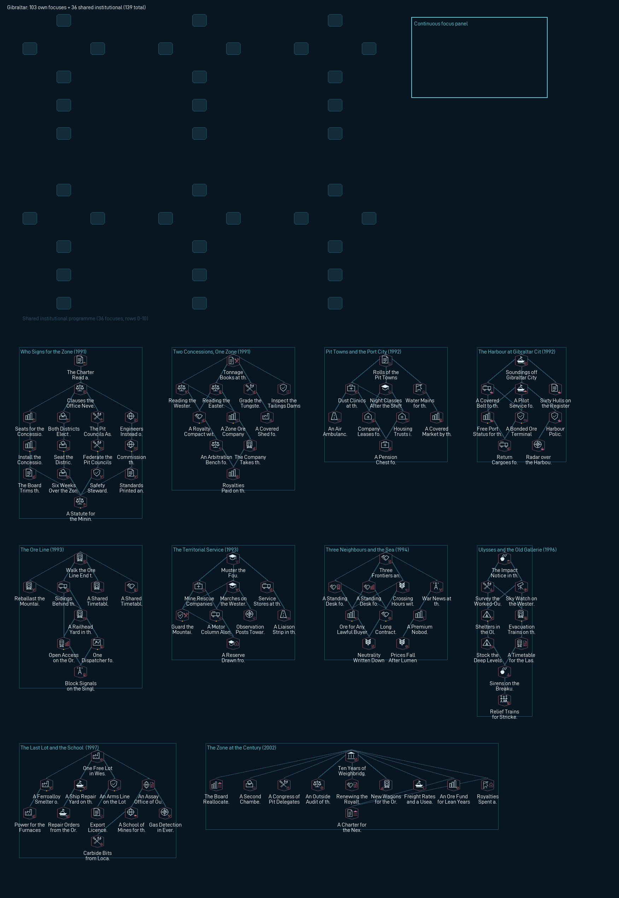
| Branch | Era | Focuses | Filter |
|---|---|---|---|
| Who Signs for the Zone | 1991 | 15 | FOCUS_FILTER_POLITICAL |
| Two Concessions, One Zone | 1991 | 11 | FOCUS_FILTER_INDUSTRY |
| Pit Towns and the Port City | 1992 | 9 | FOCUS_FILTER_STABILITY |
| The Harbour at Gibraltar City | 1992 | 9 | FOCUS_FILTER_NAVY_XP |
| The Ore Line | 1993 | 9 | FOCUS_FILTER_INDUSTRY |
| The Territorial Service | 1993 | 9 | FOCUS_FILTER_ARMY_XP |
| Three Neighbours and the Sea | 1994 | 10 | FOCUS_FILTER_POLITICAL |
| Ulysses and the Old Galleries | 1996 | 9 | FOCUS_FILTER_STABILITY |
| The Last Lot and the School of Mines | 1997 | 11 | FOCUS_FILTER_RESEARCH |
| The Zone at the Century | 2002 | 11 | FOCUS_FILTER_INTERNAL_AFFAIRS |
Offices: Board of the Concession Holders (neutrality / oligarchism); Elected Council of West and East Gibraltar (democratic / centrism); Federation of Pit Councils (communism / democratic_socialism); Directorate of Mines and Works (neutrality / conservatism_na)
The reading takes most of a morning. From the main station staircase in Gibraltar City, a clerk of the National Administration reads the zone's founding charter aloud, clause by clause, while ore trains shunt behind the crowd. Much of the charter concerns rights of way, weighbridges and the duties of shaft owners. Very little of it concerns who governs, because when it was written nobody thought the question mattered.
It matters now. The operating firms that work the concessions in both districts already make most of the decisions that shape daily life, from shift patterns to the rent on company houses. The shift councils in the pits have grown from bargaining committees into something close to local governments. In the port city, shopkeepers and railwaymen ask why a place with its own harbour, railway and treasury has no vote on any of them.
The Administration has chosen to put the question in the open rather than wait for it to be forced. What it cannot settle alone is the method: who gets to speak, and for how long. A public inquiry would let every faction speak and would take a year. A closed commission of senior officials would report within weeks, and nobody outside the room would trust a word of it.
Events: The Charter on the Station Steps; Two Rights, One Weighbridge; The Weighbridge Audit Returns; The Roll of the Pit Towns; Eleven Ships at Anchor; Inspectors on the Mountain Grade; Four Battalions on One Ground; Letters from Three Capitals; War Metals; Ulysses Comes to the Pit Towns; Streaks Over the Western Ridge; Three Bids for One Lot; The First Yearbook of the Zone; Insurers and the Usean War
Sources: Mod provenance: Inherited 1991 state: ruling party neutrality with neutrality popularity 100; election_frequency 48 and elections_allowed = no; stability and war support 0.5; three research slots; starting technologies include tech_mountaineers, infantry_at, early_fighter and basic_train. Starting leader GIB_ac_government_office, localised National Administration (centrism_na), whose description says its 1991 holder has not been established. Country name for neutrality: Gibraltar Mining Zone. Research focus Physical Sustainment. The tree never names a holder and never removes or edits these.; Mod provenance: Geography: state 118 West Gibraltar (capital, state_category town, four shared slots with arms_factory 2 and industrial_complex 1, so one free; infrastructure 2; provinces 897 plains, 1799 and 3350 mountain, 4005 hills, 4463 coastal urban with naval base 8, a supply node and victory point 20 localised Gibraltar City; resources steel 25, tungsten 23, chromium 19, aluminium 16, oil 2, rubber 2). State 610 East Gibraltar (rural, two shared slots both used by arms_factory 1 and industrial_complex 1; infrastructure 2; landlocked provinces 2099, 3201 and 3562 plains, 3401 mountain, 4299 hills; supply node 2099; tungsten 21, chromium 14, aluminium 13, steel 10, oil 2, rubber 1). A level-3 railway runs 4463-897-4005-1799-3401-2099; level-2 lines run from 4463 to Marcil (9660, Arklith del Sur) and to Aurelian province 2041, and from 2099 toward Llano de Arklith (9652) and Aurelian province 939. Land neighbours ARK to the north (via 140 and 241), AUR to the south (via 49 and 95) and LEA to the east (via 170), sea to the west, computed from map/provinces.bmp and province centroids. Place names only from existing state and victory point localisation.; Mod provenance: Startup resource rights: on_startup gives Arklith the resource rights of state 610 (East Gibraltar) and Aurelia those of state 118 (West Gibraltar). The tree treats these as standing concessions, negotiates only the zone side of the terms through ideas, and never removes or transfers the rights.; Mod provenance: Neighbour context only: the Arklith tree names the Gibraltar Mining Zone on the southern edge of Arklith del Sur, run by its own mining administration, and offers a haul road toward the Marcil quays if the zone wants one (ARK_wd_fro_gibraltar_road). Aurelia and Leasath in 1991: democratic ruling party with neutrality 48 and fascism 50 percent popularity, elections suspended. No zone role in any neighbour affair is claimed and no border, core or faction changes.; Provisional gameplay: World-start calibration the tree builds on: role small territorial and merchant receiving service; 2 civilian and 3 military factories, no dockyard; 2 infantry formations (4 battalions); stocks of 800 infantry equipment, 560 motorized equipment and 24 trains; 60 convoys; combat air and combat navy deliberately absent; infantry-only service without engineer or artillery companies. Fiscal calibration GDP 62.978 billion, debt ratio 0.3, collection 0.85; executive_office institution, capacity 40. Fictional gameplay calibration, not canon national accounts.; Official: Date anchor: the IAU announces that the asteroid Ulysses may strike the Earth. No zone role is claimed.; Official: Date anchor: the Belkan War breaks out. Gibraltar takes no part; only price pressure is gameplay.; Official: Date anchor: a treaty signed in Lumen ends the Belkan War.; Official: Date anchor: the FCU announces that Ulysses will impact the Earth.; Official: Date anchor: Ulysses passes through the Roche limit. No impact in the zone is claimed.; Official: Date anchor: the FCU establishes the ISAF and the Usean Continental War follows. No zone role.; Provisional gameplay: All Gibraltar focuses, ideas, offices, decisions, buildings, flags and events in this spec. No named people; offices are collective and unnamed; no border, core, war, annexation, faction or resource-right effects; no new place names.
98 own focuses, 10 branches, 36 shared institutional focuses, 13 events, 49 ideas, 3 offices.
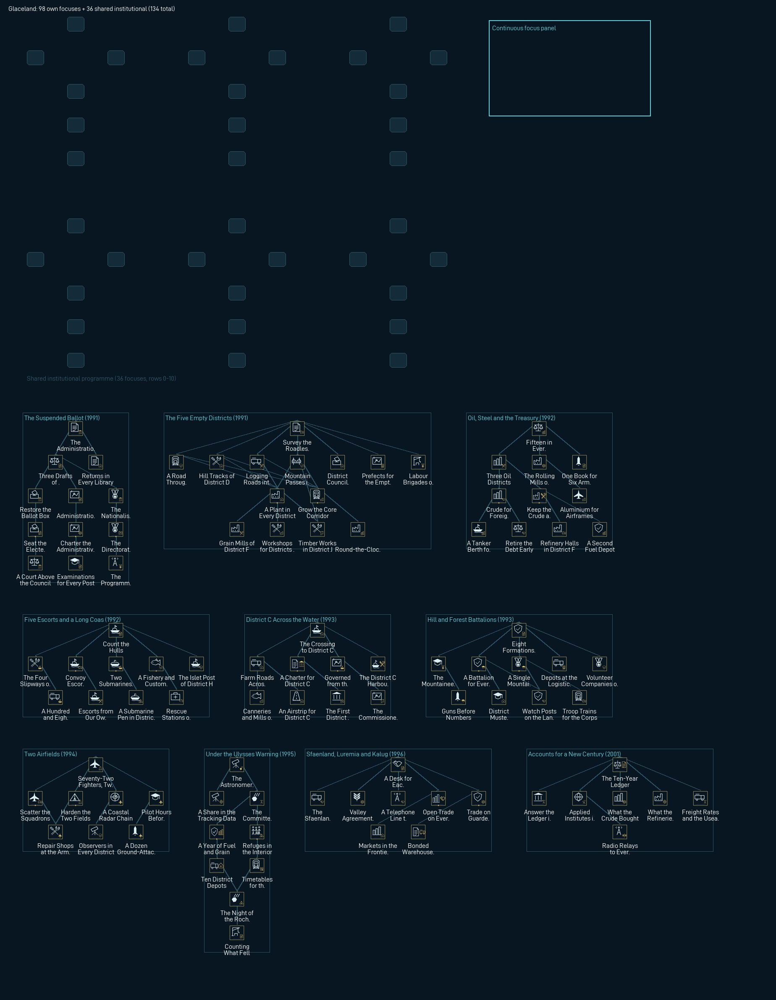
| Branch | Era | Focuses | Filter |
|---|---|---|---|
| The Suspended Ballot | 1991 | 12 | FOCUS_FILTER_POLITICAL |
| The Five Empty Districts | 1991 | 14 | FOCUS_FILTER_INTERNAL_AFFAIRS |
| Oil, Steel and the Treasury | 1992 | 11 | FOCUS_FILTER_INDUSTRY |
| Five Escorts and a Long Coast | 1992 | 10 | FOCUS_FILTER_NAVY_XP |
| District C Across the Water | 1993 | 9 | FOCUS_FILTER_STABILITY |
| Hill and Forest Battalions | 1993 | 10 | FOCUS_FILTER_ARMY_XP |
| Two Airfields | 1994 | 8 | FOCUS_FILTER_AIR_XP |
| Under the Ulysses Warning | 1995 | 9 | FOCUS_FILTER_STABILITY |
| Sfaenland, Luremia and Kaluga | 1996 | 8 | FOCUS_FILTER_POLITICAL |
| Accounts for a New Century | 2001 | 7 | FOCUS_FILTER_RESEARCH |
Offices: Elected Council of Ministers (democratic / centrism); Standing Administrative Board (neutrality / centrism_na); National Directorate (fascism / ultranationalism)
The National Administration that governs Glaceland in 1991 carries a democratic name and a suspended election calendar. Its officials run ten districts, eighteen plants, a small navy and a smaller air arm, and they do it competently enough that few people ask who appointed them. When the question is finally asked aloud, in the capital's press and in district halls from A to J, nobody in the Administration has a ready answer.
The pollsters' figures make the problem sharper. Barely one citizen in a hundred supports the party whose name the government carries. Close to half want the country run by non-party administrators, as it effectively already is. The other half answers to a nationalist movement that promises discipline, a stronger coast and an end to government by clerks. Democrats and communists together could fill a meeting hall, not a chamber.
The Administration must decide how the question will be argued before it can decide how it will be answered. District hearings would take a season and invite every grievance in the country into the record. A decision inside the Administration would be faster and quieter, and would confirm everything its critics say about it. Both choices will be remembered when the seals change hands.
Events: The Suspended Ballot; Returns from the Districts; Half a Country Without Roads; The Collection Gap; A Long Coast and Five Escorts; Across the Water; Hill Country and Eight Formations; Every Aircraft on Two Fields; Ulysses Will Strike; Ulysses Breaks Apart; Three Frontiers, Three Desks; A Commission Drawn by Lot; War in Usea
Sources: Mod provenance: Inherited Glaceland state: ruling_party democratic with elections_allowed = no; popularities neutrality 48, fascism 50, democratic 1, communism 1; stability and war support 0.5; three research slots; tech_mountaineers; grand doctrines superior_firepower, fleet_in_being and operational_integrity; starting office GLA_ac_government_office (National Administration), whose 1991 holder is not established. The tree reads these as political pressures and never edits them.; Mod provenance: World-foundation calibration, itself labelled provisional gameplay: 12 civilian plants, 6 arms works and 4 dockyards; 8 infantry formations; 72 fighters and 12 ground-attack aircraft on 2 airfields; 5 escorts and 2 submarines; 108 convoys; 4 supply centres; role dispersed coastal support; starting research priority Physical Sustainment. Fiscal profile GDP 200, debt ratio 0.3, collection 0.85, growth 3, inflation 2 is fictional gameplay calibration, not national accounts.; Mod provenance: Geography: 1991 states 9, 26, 35, 41, 50 (capital), 52, 87, 129, 172 and 576, labelled District A, B, C, D, Capital District, F, G, H, I and J. All industry sits in 50, 26, 87 and 172, the dockyards in 9; states 35, 41, 52, 129 and 576 have no infrastructure or industry. State 35 is detached from the mainland and province 9991 (state 129) is an outlying naval post. Land neighbours SFA (via 9 and 52), LUR (52, 576) and KLG (576), computed from map/provinces.bmp. Terrain counts from map/definition.csv. No new place names.; Official: Date anchor only: the International Astronomical Union announces that Ulysses may strike the Earth. No Glacelandic role is claimed.; Official: Date anchor only: the impact of Ulysses is announced worldwide. Glacelandic preparations are gameplay.; Official: Date anchor only: Ulysses passes through the Roche limit. What falls near Glaceland is not claimed.; Official: Ulysses broke into fragments as it passed into the atmosphere; used only to say the asteroid broke apart. No Stonehenge content and no impact site is used.; Official: Date anchor only: the ISAF is established against Erusea. The focus that reacts to it waits for the mod flag ac_ucw_isaf_formed and claims no Glacelandic part in the war.; Provisional gameplay: All Glacelandic focuses, ideas, offices, buildings, flags, decisions and events in this spec. No named people; offices are collective and unnamed; no border, core, war, annexation or faction effects.
101 own focuses, 9 branches, 36 shared institutional focuses, 11 events, 59 ideas, 3 offices.

| Branch | Era | Focuses | Filter |
|---|---|---|---|
| A Majority Without a Ballot | 1991 | 14 | FOCUS_FILTER_POLITICAL |
| One Line Through Five Districts | 1991 | 12 | FOCUS_FILTER_INTERNAL_AFFAIRS |
| Steel in Three Districts | 1992 | 11 | FOCUS_FILTER_INDUSTRY |
| One Harbour, One Escort | 1992 | 11 | FOCUS_FILTER_NAVY_XP |
| Four Formations on a Long Border | 1993 | 10 | FOCUS_FILTER_ARMY_XP |
| Twenty-Four Fighters, One Runway | 1993 | 10 | FOCUS_FILTER_AIR_XP |
| Five Neighbours, No Rail Across | 1994 | 12 | FOCUS_FILTER_POLITICAL |
| Ulysses over Five Districts | 1994 | 11 | FOCUS_FILTER_STABILITY |
| The Ledger Years | 2001 | 10 | FOCUS_FILTER_RESEARCH |
Offices: Cabinet of the Kalugan Chamber (democratic / social_democracy); Office of the Elected President (democratic / conservatism); Standing Council of Administrators (neutrality / centrism_na)
The survey commissioned by the National Administration lands on ministers' desks in a plain grey cover. Six citizens in ten back the democratic party whose colours the Administration wears. A fifth would rather be governed by non-party administrators. About one in nine supports the labour socialists, and fewer than one in ten the nationalist circle. On paper the republic has a clear majority. In law it has no date on which that majority may vote.
The figures cut in two directions at once. The majority party's own branches ask why a government that borrows their name keeps the calendar locked. The Administration's senior officials answer that they have kept the railway, the yards and the mills running through lean years, and that a campaign now would turn every budget line into a slogan. Both sides quote the same tables, often on the same page.
Before anyone can decide what the republic should become, the Administration must decide what to do with the survey itself. Publishing it in full would put the question to the whole country at once. Circulating it only inside the ministries would buy a season of quiet and confirm every suspicion about who really governs Kaluga.
Events: Six in Ten, and No Vote; A Report on the Line; Three Districts, One Steel Trade; Three Logbooks, One Harbour; Four Formations, Five Frontiers; Thirty Aircraft, One Strip of Concrete; Five Neighbours on One Map; A Warning from the Astronomers; The Year the Impact Was Confirmed; What the Shelter Count Found; Ten Years of Figures
Sources: Mod provenance: Inherited 1991 state: ruling_party democratic with elections_allowed = no and election_frequency 48; popularities democratic 61, neutrality 20, communism 11, fascism 8; stability and war support 0.5; three research slots; technology including tech_mountaineers, tech_engineers, early_fighter and basic_train; grand doctrines superior_firepower, fleet_in_being and operational_integrity. The starting leader is the unnamed National Administration office (KLG_ac_government_office, centrism), whose description says its 1991 holder has not been established. Country names Republic of Kaluga (democratic and neutrality). The tree never names a holder.; Provisional gameplay: World-start calibration the tree builds on: role limited coastal defense; 6 civilian, 5 military and 2 naval factories; 4 infantry formations (6 battalions) with replacement-backed engineers; 24 fighters on the single capital air base with 6 in reserve; one destroyer (the KLG Coastal Escort variant); 60 convoys; 2 supply centres; research priority Physical Sustainment (transport, equipment replacement, affordable service). Fiscal profile GDP 100, debt ratio 0.3, collection 0.85, growth 3, inflation 2 is fictional gameplay calibration, not national accounts.; Mod provenance: Geography: 1991 states 23 (capital, large city, captioned Kaluga Capital District; victory point Kaluga Capital Centre 1721; naval base 3 at province 1890; 2 civilian, 2 military, 2 dockyards, air base 1, fuel silo 1; steel 7, aluminium 4, oil 2, rubber 2), 73 (Kaluga District B; forest 6, plains 3, hills 1, marsh 1; no buildings, infrastructure or resources), 138 (forest 11, marsh 3; 2 civilian, 1 military; steel 6, aluminium 3, oil 2, rubber 1), 569 (plains 10, hills 1, mountain 1; 2 civilian, 2 military; logistics centre at 1858; steel 6, aluminium 3, oil 2, rubber 2) and 570 (Kaluga District E; plains 9, hills 1, mountain 1; no buildings, infrastructure or resources). States 138 and 569 keep inherited Earth-template names, which this tree does not use; all five states are called by function in the text. Every state is coastal. Railways (map/railways.txt): level-2 lines 1721 to 1858 through 570, 1721 to 9645 through 73, and the capital spur to 1890; no line crosses a frontier. Land neighbours from map/provinces.bmp: Silvonia (23, 73, 569, 570), Luremia (73, 138), Glaceland (138), Romny (569) and Yuktobania (569, via its state 515). No other place is named.; Mod provenance: Yuktobanian-owned states 515 and 555 carry add_core_of = KLG in inherited history, and the world-start calibration keeps their identities. The tree treats them only as a question of how the republic speaks about its old registers: no claim, core, border, war or ownership effect anywhere.; Mod provenance: Neighbour consistency: Glaceland (tools/world_depth/gla/content.py) describes the Kaluga frontier as a short mountain stretch of its District J and offers a frontier telephone line; Silvonia (tools/world_depth/esn/content.py) faces Kaluga with hill and mountain districts and has no agreed airspace line with any neighbour. This tree acts only on the Kalugan side and claims no action, consent or outcome for any neighbour.; Official: Date anchor: Yuktobania announces a new class of submarine to the world. Premise of the submarine watch focus; no Kalugan role is claimed and no person is named.; Official: Date anchor: the International Astronomical Union announces that Ulysses will pass close to Earth with a chance of impact. Opens the Ulysses branch; no Kalugan role is claimed.; Official: Date anchor: the Belkan War breaks out. Gate of the distant-war focus; Kaluga takes no part.; Official: Date anchor: the President of the FCU announces that Ulysses will impact the Earth. Gate of the impact focus; where fragments fall is never stated for Kaluga.; Official: Date anchor: Ulysses passes through the Roche limit. Gate of the Roche-limit focus.; Official: In 1999 Ulysses strikes the Usean continent and inflicts catastrophic damage; used only as distant news in the Roche-limit focus. No fall in or near Kaluga is claimed.; Official: The Arkbird is a joint Osean and Yuktobanian project to clear fragments of Ulysses; premise of the debris watch focus, which claims no Kalugan part in it.; Official: Date anchor: Osea and Yuktobania cooperate to convert the Arkbird into a debris-clearing platform. Gate of the thaw focus, read as a change in the climate for a small neighbour of Yuktobania.; Official: Date anchor: the FCU establishes the ISAF. The focus that reacts to it waits for the mod flag ac_ucw_isaf_formed and claims no Kalugan part in the war.; Provisional gameplay: All Kalugan focuses, ideas, offices, buildings, flags, decisions and events in this spec. No named people; offices are collective and unnamed; no border, core, war, annexation or faction effects.
89 own focuses, 10 branches, 36 shared institutional focuses, 13 events, 62 ideas, 3 offices.
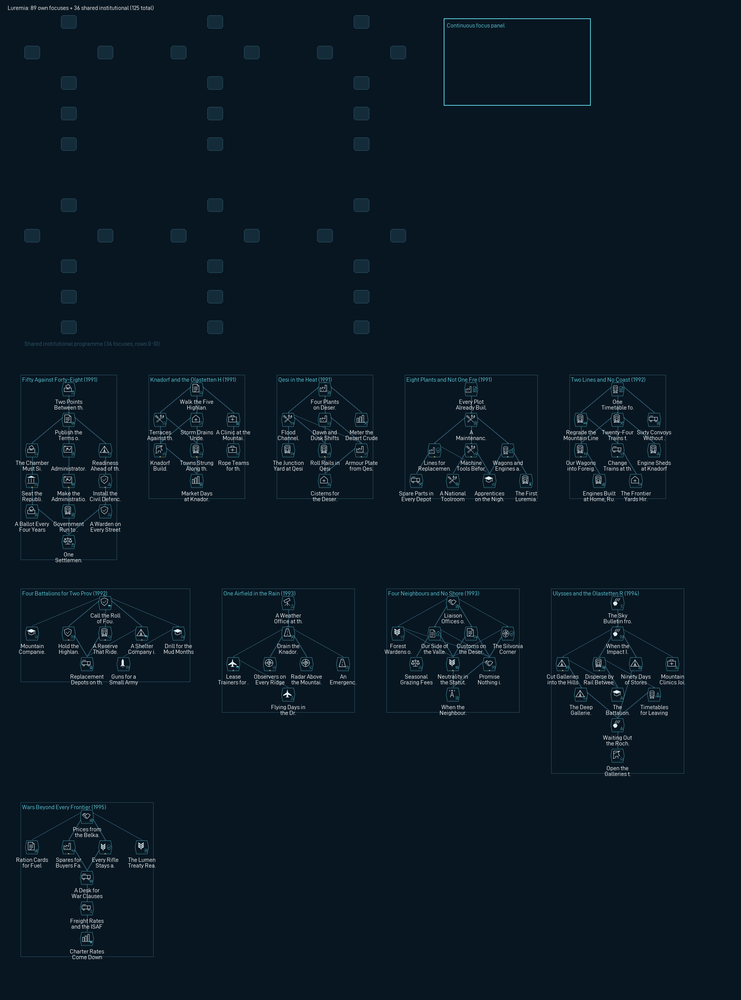
| Branch | Era | Focuses | Filter |
|---|---|---|---|
| Fifty Against Forty-Eight | 1991 | 12 | FOCUS_FILTER_POLITICAL |
| Knadorf and the Olastetten Hills | 1991 | 8 | FOCUS_FILTER_INTERNAL_AFFAIRS |
| Qesi in the Heat | 1991 | 8 | FOCUS_FILTER_INDUSTRY |
| Eight Plants and Not One Free Plot | 1991 | 9 | FOCUS_FILTER_INDUSTRY |
| Two Lines and No Coast | 1992 | 9 | FOCUS_FILTER_INDUSTRY |
| Four Battalions for Two Provinces | 1992 | 8 | FOCUS_FILTER_ARMY_XP |
| One Airfield in the Rain | 1993 | 7 | FOCUS_FILTER_AIR_XP |
| Four Neighbours and No Shore | 1993 | 9 | FOCUS_FILTER_POLITICAL |
| Ulysses and the Olastetten Rock | 1994 | 11 | FOCUS_FILTER_STABILITY |
| Wars Beyond Every Frontier | 1995 | 8 | FOCUS_FILTER_WAR_SUPPORT |
Offices: Cabinet of the Republic Chamber (democratic / liberalism); The Standing National Administration (neutrality / centrism_na); Directorate of Civil Defence (neutrality / stratocracy)
The cabinet secretary reads the agenda aloud in the old council room at Knadorf, and the first item is the cabinet itself. The National Administration has governed under a democratic banner with the ballot suspended, and the most recent polling puts the democratic parties at one half of the country and the non-party administrators only two points behind. Neither camp can claim the country. Both can claim to be its larger part on a good day.
The democrats want the polling day restored and the chamber sitting again before the year is out. The administrators answer that a country of two provinces, eight plants and four battalions needs steady management more than it needs campaigns. A smaller group from the civil defence staff says nothing in the meeting and a great deal in the corridors: that the vote matters less than the readiness of the shelters, the depots and the trains.
Today the cabinet decides only how the argument will be heard. A public hearing in the council room would be broadcast and quoted for months. Written submissions would be quieter, slower and easier to steer. The provincial delegations from Olastetten and Qesi have already booked rooms in the capital for the week.
Events: Two Points Apart; Signatures on the Station Wall; Notebooks from the Hills; Four Plants on the Sand; Not One Free Plot; Freight Without a Harbour; Roll Call for a Small Army; What the Airfield Is For; Four Neighbours Around a Small Country; Fragments Will Fall Somewhere; A Night Underground; The Belkan War Reaches the Shops; War Clauses Again
Sources: Mod provenance: Inherited 1991 politics: ruling_party democratic with elections_allowed = no and election_frequency 48; popularities democratic 50, neutrality 48, fascism 1, communism 1; stability and war support 0.5; three research slots; tech_mountaineers and early_fighter among the starting technologies. The starting leader is the unnamed National Administration office (LUR_ac_government_office, centrism), whose 1991 holder has not been established. The tree never names a holder.; Mod provenance: Country names per party: Luremian Republic (democratic and neutrality), Luremian Commune (communism), Luremian Free State (fascism), Grand Duchy of Luremia (monarchism); adjective Luremian. All three political answers in this tree keep the Republic names; no commune, free state or grand duchy path is offered.; Mod provenance: Geography: two 1991 states, both category town with four shared slots and every slot filled. State 226 (capital, captioned Olastetten): 2 civilian and 2 arms plants, infrastructure 3, air base 1, provinces 218 (hills, victory point Knadorf, value 20), 824 (mountain), 1005 (hills), 1301 (mountain) and 5053 (hills); supply nodes on 218 and 824; oil 2, rubber 2, steel 3. State 231 (captioned Qesi): 3 civilian and 1 arms plant, infrastructure 3, no air base, desert provinces 556 and 5620, supply node on 556; oil 2, rubber 1, steel 3. No province is coastal. Level-2 railways 218-824 and 218-1005-556. Strategic region 275 holds every Luremian province, with temperatures of 20 to 35 degrees in every month, heavy rain on 40 to 50 percent of days and full mud. Land neighbours computed from map/provinces.bmp: KLG (states 73 and 138) along 218, 824, 1301 and 5053; GLA (52 and 576) along 556, 1005 and 5053; SFA (189) along 556 and 5620; ESN (484 and 583) along 1301 and 5620. The placeholder captions on provinces 824 and 556 are not used as place names, and no other place is named.; Provisional gameplay: World-start calibration the tree builds on: role landlocked civil defense; 5 civilian, 3 military and 0 naval factories; three infantry formations of four battalions in all, with combat aviation and combat navy deliberately absent; stocks of 800 infantry equipment, 640 motorized equipment and 24 trains; 60 convoys; oil base 4; research priority Physical Sustainment. Fiscal figures (GDP 108, debt ratio 0.3, collection 0.85, growth 3, inflation 2) are fictional calibration, not canon national accounts.; Mod provenance: Neighbour context only: all four neighbours start 1991 with a democratic ruling party and elections_allowed = no. Kaluga has democratic popularity 61; Sfaenland, Silvonia and Glaceland have fascism at 50 percent popularity. The Glaceland tree describes herders and foresters from its Districts F and J crossing into Luremia along old valley paths; this tree only registers the Luremian side of those crossings and asserts no neighbour response to any Luremian policy.; Official: Date anchor: the International Astronomical Union announces that Ulysses may strike the Earth. Gate of the sky bulletin focus; no Luremian role is claimed.; Official: Date anchor: the Belkan War breaks out. Gate of the distant-war branch; Luremia takes no part.; Official: Date anchor: a treaty is signed in Lumen and the Belkan War ends. Gate of the treaty focus.; Official: Date anchor: the FCU announces that Ulysses will impact the Earth. Gate of the announcement focus; where fragments fall is never stated.; Official: Date anchor: Ulysses passes through the Roche limit of the Earth. Gate of the Roche night focus; no damage in Luremia is claimed.; Official: Date anchor: the ISAF is established against Erusea. Background to the freight focus, which also waits for the mod global flag ac_ucw_isaf_formed; no Luremian part in the war is claimed.; Official: Date anchor: Erusea surrenders and the Continental War ends. Gate of the closing freight focus.; Mod provenance: Campaign hooks read only, never set: ac_ucw_isaf_formed (Usean Continental War script) and belka_lost_belkan_war (Belkan War events). Each reaction is a leaf or late focus, so no outcome blocks the rest of the tree.; Provisional gameplay: All Luremian focuses, ideas, offices, buildings, flags, decisions and events in this spec. No named people; offices are collective and unnamed; no border, core, war, annexation or faction effects. Both states have no free shared slot, so only infrastructure, air base and radar levels are added.
94 own focuses, 9 branches, 36 shared institutional focuses, 12 events, 74 ideas, 3 offices.
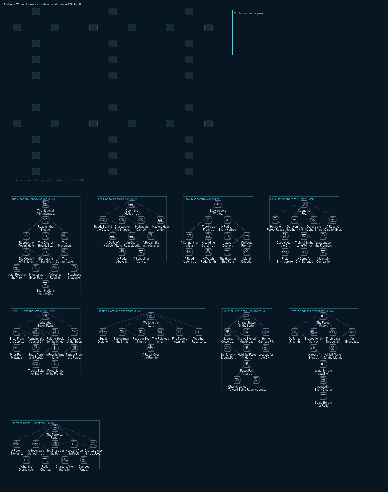
| Branch | Era | Focuses | Filter |
|---|---|---|---|
| The Election Nobody Called | 1991 | 13 | FOCUS_FILTER_POLITICAL |
| The Capital Port and Its Hulls | 1991 | 10 | FOCUS_FILTER_NAVY_XP |
| The Six Western Islands | 1991 | 11 | FOCUS_FILTER_INTERNAL_AFFAIRS |
| Four Battalions in the Forest | 1991 | 11 | FOCUS_FILTER_ARMY_XP |
| Steel, Oil and the Arms Lines | 1991 | 11 | FOCUS_FILTER_INDUSTRY |
| Baltica, Seterano and Valka | 1992 | 8 | FOCUS_FILTER_POLITICAL |
| Hulls for Hire in the Belkan War | 1995 | 10 | FOCUS_FILTER_WAR_SUPPORT |
| Ulysses and the Forest Districts | 1996 | 10 | FOCUS_FILTER_STABILITY |
| Malynea at the Turn of the Century | 2000 | 10 | FOCUS_FILTER_POLITICAL |
Offices: Council of Ministers of Malynea (democratic / centrism); Standing Board of the Three Districts (neutrality / centrism_na); Committee of National Readiness (fascism / ultranationalism)
The calendar in the cabinet office still shows an election every four years, and the last date it marks passed without a single polling hall opening. Malynea is governed by a National Administration that calls itself democratic and has kept the ballot suspended for longer than most young voters can remember. Its officials run the capital port, the forest districts and the six western islands competently enough that many citizens have stopped asking why.
The opinion surveys explain why the question is dangerous. Half the respondents back the national movement, which wants a disciplined government of readiness. Almost as many back no party at all and trust the administrators they already know. The democrats who want the ballot restored are barely one in a hundred, and they know perfectly well that any election they force would be won by somebody else.
The movement has announced a petition and claims it will gather signatures in every district and on every island. The administration can publish the election clause now and let the whole country argue about it, or wait to see how many names the movement really collects before it commits itself to anything. Both choices will be read as a statement of intent, and both will be quoted for years.
Events: The Ballot Nobody Called; The Signatures Are Counted; A Register of Hulls; Mail Day in the Islands; Muster in the Forest; Seven Plants on One Page; Three Frontiers on Foot; The Brokers Work Through the Night; The Sky Above the Forests; A Vigil on the Cold Coast; Ten Years of Answers; Manifests Open to Any Inspector
Sources: Mod provenance: Inherited 1991 politics: ruling_party democratic with elections_allowed = no and election_frequency 48; popularities fascism 50, neutrality 48, democratic 1, communism 1; stability 0.5 and war support 0.5; three research slots including tech_mountaineers and early_fighter. The starting leader is the unnamed National Administration office (MAY_ac_government_office, centrism), whose 1991 holder has not been established. Only MAY_democratic (Malynea) is localised as a country name. The tree never names a holder; party popularity is read as context, not as proof of constitutional form (institution civil_administration, capacity 40).; Mod provenance: Geography: three 1991 states, all category town with four shared slots. 341 (capital, captioned Malynea Capital District): forest provinces 321, 4010, 5515, 7842 and 7949, plains 1125, hills 3480; 2 civilian, 1 arms, 1 dockyard (no free slot), infrastructure 2, naval base, supply node and victory point 20 in coastal province 5515 (captioned Malynea Capital Centre); steel 5, oil 2, rubber 2. 328 (captioned Malynea District B): coastal plains 1698, forest 1935 and 4304; 1 civilian and 2 arms (one free slot), infrastructure 2; steel 4, oil 2, rubber 1. 290 (captioned Malynea District A): six detached hill islands 2243, 2379, 3394, 9931, 9939 and 9940, each with a naval base and nothing else, infrastructure 0, four free slots, lying far to the west of the mainland with no other land nearby. One level-2 railway runs 5515-1125-1698. Mainland strategic region 236 has winters well below freezing with snow and blizzards. Land neighbours computed from map/provinces.bmp: BAL (321) via 1698 and 4304; SET (356, mountain provinces) via 1935, 3480 and 4304; VLK (359 and 382) via 321, 3480 and 7949. Compass words come from province centroids. Captions are not used as place names; no place is named.; Provisional gameplay: World-start calibration the tree builds on: role island civil defense and merchant receiving; 3 civilian, 3 military and 1 naval factory (the only merchant convoy yard among the civil-defence roles); two infantry formations (four battalions), infantry-only with no support companies; combat aviation and combat navy deliberately absent; 152 convoys; stocks of 800 infantry equipment, 560 motorized equipment and 24 trains; research priority Physical Sustainment. Fiscal figures (GDP 60, growth 3.0) are fictional calibration, not canon national accounts.; Mod provenance: Neighbour context only: Seterano and Valka inherit the same template as Malynea (democratic ruling party, elections suspended, fascism 50 and neutrality 48 percent). Baltica, read from its own tree, has one railway 797-1235-1628 ending at its harbour on the frontier with Malynea and makes only unilateral offers to its small neighbours. Malynean offers are unilateral too; no neighbour response or border change is asserted.; Official: Date anchor: Scinfaxi-class submarines are announced at a political convention in Cinigrad, Yuktobania. Used only for the merchant masters leaf, which also requires the mod global flag ac_bwr_cinigrad; no Malynean role is claimed.; Official: Date anchor: the IAU announces that Ulysses may strike the Earth. Background to the asteroid branch.; Official: Date anchor: the Belkan War breaks out. Opening of the wartime charter branch; Malynea takes no part.; Official: Date anchor: a treaty is signed in Lumen and the Belkan War ends. Date gate of the falling rates focus.; Official: Date anchor: the FCU announces that Ulysses will impact the Earth. Date gate of the asteroid branch opening; where fragments fall is never stated.; Official: Date anchor: Ulysses passes through the Roche limit of the Earth. Date gate of the July vigil focus; no damage in Malynea is claimed.; Official: Erusea invades the neutral country of San Salvacion and seizes Stonehenge. Background to the Usean lanes focus, which also requires the mod global flag ac_ucw_war_started; no Malynean role is claimed.; Mod provenance: Campaign hooks read only, never set: ac_bwr_cinigrad (common/scripted_effects/ac_belkan_record.txt); belka_won_belkan_war and belka_lost_belkan_war (events/Belka.txt); ac_ucw_war_started, ac_ucw_outcome_isaf_victory and ac_ucw_outcome_erusean_victory (common/scripted_effects/ac_ucw.txt). Each outcome reaction is a leaf focus, so no outcome blocks the tree.; Provisional gameplay: All Malynean focuses, ideas, offices, buildings, flags, decisions and events in this spec. No named people; offices are collective and unnamed; no border, core, war, annexation or faction effects. Buildings only in states 290, 328 and 341: the capital state has no free shared slot, so it gains only infrastructure, air base and radar levels; 328 gains one shared building from a mutually exclusive pair; 290 gains a dockyard and a civilian plant.
99 own focuses, 10 branches, 36 shared institutional focuses, 12 events, 76 ideas, 3 offices.
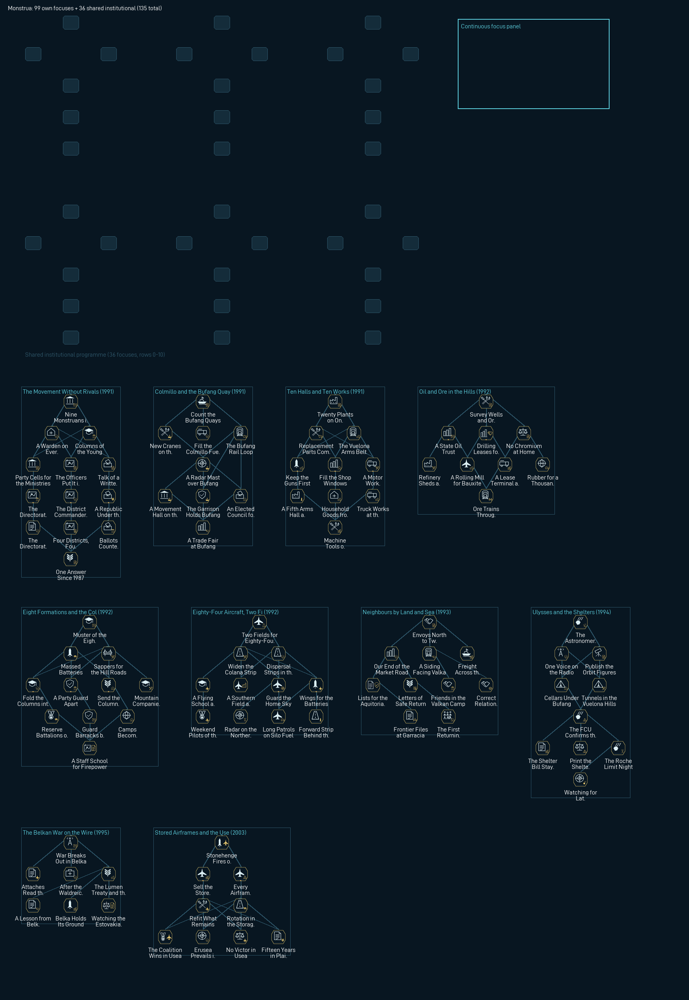
| Branch | Era | Focuses | Filter |
|---|---|---|---|
| The Movement Without Rivals | 1991 | 13 | FOCUS_FILTER_POLITICAL |
| Colmillo and the Bufang Quays | 1991 | 9 | FOCUS_FILTER_INTERNAL_AFFAIRS |
| Ten Halls and Ten Works | 1991 | 10 | FOCUS_FILTER_INDUSTRY |
| Oil and Ore in the Hills | 1992 | 9 | FOCUS_FILTER_INDUSTRY |
| Eight Formations and the Columns | 1992 | 11 | FOCUS_FILTER_MANPOWER |
| Eighty-Four Aircraft, Two Fields | 1992 | 11 | FOCUS_FILTER_AIR_XP |
| Neighbours by Land and Sea | 1993 | 10 | FOCUS_FILTER_POLITICAL |
| Ulysses and the Shelters | 1994 | 10 | FOCUS_FILTER_STABILITY |
| The Belkan War on the Wire | 1995 | 7 | FOCUS_FILTER_WAR_SUPPORT |
| Stored Airframes and the Usean War | 2003 | 9 | FOCUS_FILTER_AIR_XP |
Offices: Directorate of the Monstruan Movement (fascism / fascism_ideology); Council of the Four District Commands (neutrality / stratocracy); Cabinet Under the Monstruan Charter (democratic / conservatism)
The district offices send their returns to Bufang in sealed folders, one for each state. On paper the totals match the movement's boast: nine Monstruans in ten count themselves its supporters. The folders also hold what the totals hide. In the Vuelona arms belt loyalty is strongest among older workers who remember worse shortages. On the Colana plains it is thinnest among farmers who mostly meet the movement as tax collectors in new uniforms.
The general staff appears in the returns as well. Officers back the movement because it pays for the army, not because they enjoy its marches, and several district commanders have written remarks of their own in the margins. The handful of democrats and neutral notables who still meet in public turn out to be better organised than anyone in the committee believed, with membership lists that run to thousands in the capital alone.
The committee must decide what to do with the folders. It can circulate them among its own members and argue over them behind closed doors, seal them in the archive and keep repeating the public figure, or pass a copy to the general staff and ask the officers plainly what they intend. Each choice shapes the argument about what the movement should become.
Events: The Loyalty Returns; The General Staff Replies; Ships at Anchor off Bufang; Twenty Plants in One Book; What Lies Under the Hills; The Columns at the Roadside; Wing to Wing on the Apron; The Envoys Come Home; Numbers from a Foreign Observatory; A Night in the Cellars; Dispatches from the Belkan Front; Who Still Has Fighters to Sell
Sources: Mod provenance: Inherited 1991 state: capital state 406; ruling_party fascism; last_election 1987.11.9, election_frequency 48, elections_allowed = no; popularities fascism 90, neutrality 5, communism 3, democratic 2; stability 0.5 and war support 0.80; four research slots; tech_mountaineers, early_fighter and basic_train among the starting technologies; grand doctrines superior_firepower, new_fleet_in_being and new_operational_integrity. The starting leader is the unnamed National Administration office (MST_ac_government_office, fascism_ideology), whose 1991 holder has not been established. Party names: Monstruan State (fascism), Monstruan Junta (neutrality), Monstruan Republic (democratic), Union of Monstruan Socialist Republics (communism), Kingdom of Monstrua (monarchism). The tree calls the ruling party the movement and never names a holder.; Mod provenance: Geography: four 1991 states. 406 Colmillo (capital; large_city, eight shared slots, seven used by 3 arms factories, 3 industrial complexes and the fuel silo; infrastructure 5; air base 3; naval base and victory point 90 at province 8233, captioned Bufang; supply nodes at 8233 and 8533; hills, forest and plains). 408 Garracia (town, four slots all used; infrastructure 4; hills and forest; supply node 8526; land frontier with AQU via 784 and 8526). 422 Colana (town, three of four slots used; infrastructure 3; air base 1; plains; supply node and victory point 5 at 1917; land frontier with VLK and AQU via 1428). 439 Vuelona (large_city, seven of eight slots used by 4 arms factories and 3 industrial complexes; infrastructure 5; no air base, resources or victory point). Every state is coastal. Level-2 railway: 8233-3639-1989-8533 inside Colmillo; trunk 1989-1473-25-4123-3285-1917 through all four states; spurs 4123-8526 to the Garracia frontier depot and 25-2247-3587 to the Vuelona coast. Sea neighbours: Sotoa across sea provinces 10225 and 10929 to the south; Valka and Aquitoria across 10722 and 10014. Adjacency and compass words come from map/provinces.bmp, map/definition.csv and province centroids. The state captions and Bufang are inherited archive names; the logistics-centre hub captions are not used as place names.; Mod provenance: Neighbours as inherited: Aquitoria a crown government with its chamber unelected since 1987; Valka and Sotoa ruled by democratic parties with fascism 50 and neutrality 48 percent popularity and elections suspended. The Aquitoria spec describes a market road and customs post on its southern frontier, Monstruan uniformed men at the Monstruan end of that post, Monstruan exiles living in Aquitoria and Monstruan envoys calling at its crown office; this tree writes the Monstruan side of those and never assumes which Aquitorian answer was chosen. No border, core or faction of any neighbour changes.; Provisional gameplay: World-start calibration the tree builds on: role territorial and air reserve with no combat navy; 10 civilian and 10 military factories, no dockyard; 8 infantry formations of five battalions with replacement-backed engineer and artillery companies; 72 fighters and 12 support aircraft on two airfields, with 18 and 4 more in storage; stocks of 1920 infantry equipment, 1040 motorized equipment, 32 trains, 384 support equipment and 240 artillery; 60 convoys; research priority Physical Sustainment. Resources oil 14, aluminium 14, steel 16, rubber 7, tungsten 4, no chromium. Fiscal calibration GDP 280 billion, debt ratio 0.3, collection 0.85, growth 3.0, inflation 2.0; command_administration institution, capacity 40. Fictional gameplay calibration, not canon national accounts.; Official: Date anchor: the IAU announces that the asteroid Ulysses will pass close to the Earth and may strike it. Opening of the asteroid branch; Monstruan preparations are gameplay.; Official: Date anchor: the Belkan War breaks out. Date gate of the distant-war branch; Monstrua takes no part.; Official: The Belkan Army uses seven nuclear devices in the Waldreich Mountains. Background to the fallout focus, which also reads the mod flag belka_dropped_nukes; no effect on Monstrua is claimed.; Official: Date anchor: a treaty is signed in Lumen and the Belkan War ends. Date gate of the postwar focus.; Official: Date anchor: the FCU announces that Ulysses will impact the Earth. Date gate of the shelter expansion focus; where fragments fall is never stated.; Official: Date anchor: Ulysses passes through the Roche limit of the Earth. Date gate of the shelter night focus and event; no damage in Monstrua is claimed.; Official: Date anchor: Osea, Emmeria and other nations join economic sanctions against Estovakia. Date gate of the import review focus; Monstrua is not claimed among the sanctioning states.; Official: Erusea invades the neutral country of San Salvacion, seizes Stonehenge and uses its railguns against aircraft. Premise of the stored-airframe branch; no Monstruan sale is claimed as fact.; Official: The FCU establishes the ISAF. Mentioned in the opening of the stored-airframe branch; trade only, no faction.; Official: Farbanti falls, the ISAF accepts the Erusean surrender and the Continental War ends. Date gate of the closing account; the outcome focuses read the mod outcome flags instead of assuming this ending.; Mod provenance: Campaign hooks read only, never set: belka_won_belkan_war, belka_lost_belkan_war and belka_dropped_nukes (events/Belka.txt); ac_ucw_outcome_isaf_victory, ac_ucw_outcome_erusean_victory and ac_ucw_outcome_stalemate (common/scripted_effects/ac_ucw.txt). Each reaction is a leaf focus, so no outcome blocks the tree.; Provisional gameplay: All Monstruan focuses, ideas, offices, buildings, flags, decisions and events in this spec. No named people; offices are collective and unnamed; no border, core, war, annexation or faction effects. Shared buildings use only the single free slots in Colmillo, Colana and Vuelona; the rest are air bases, radar and infrastructure within their caps. No dockyard and no combat navy, following the calibration.
103 own focuses, 10 branches, 36 shared institutional focuses, 12 events, 78 ideas, 3 offices.
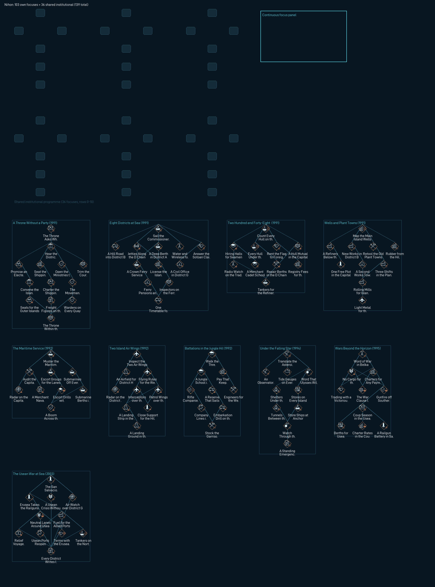
| Branch | Era | Focuses | Filter |
|---|---|---|---|
| A Throne Without a Party | 1991 | 13 | FOCUS_FILTER_POLITICAL |
| Eight Districts at Sea | 1991 | 12 | FOCUS_FILTER_INTERNAL_AFFAIRS |
| Two Hundred and Forty-Eight Hulls | 1991 | 10 | FOCUS_FILTER_NAVY_XP |
| Wells and Plant Towns | 1991 | 10 | FOCUS_FILTER_INDUSTRY |
| The Maritime Service | 1992 | 9 | FOCUS_FILTER_NAVY_XP |
| Two Island Air Wings | 1992 | 9 | FOCUS_FILTER_AIR_XP |
| Battalions in the Jungle Hills | 1992 | 9 | FOCUS_FILTER_MANPOWER |
| Under the Falling Star | 1994 | 10 | FOCUS_FILTER_STABILITY |
| Wars Beyond the Horizon | 1995 | 10 | FOCUS_FILTER_WAR_SUPPORT |
| The Usean War at Sea | 2003 | 11 | FOCUS_FILTER_WAR_SUPPORT |
Offices: Crown Cabinet of the Island Chamber (monarchism / constitutional_monarchy); Directory of the Shipping Houses (neutrality / oligarchism); Standing Committee of the National Movement (fascism / ultranationalism)
The crown office publishes its inquiry on the first working morning of the year, and by noon every newspaper in the capital has printed the questions in full. They are short: who should hold the ministries, who should choose them, and what the throne should keep for itself. They are also the first questions the court has put to the country in living memory. Nihon has a throne, eight districts and a large merchant fleet, but the party that once spoke for the crown has no following left to count.
The answers are already known in outline. The national movement claims half the country and holds the squares of the two plant towns. The shipping houses, refinery companies and harbour boards hold most of the rest, together with the district commissioners and the clerks who keep the islands running. A handful of democratic and socialist circles meet in rented rooms and ask for a vote that nobody expects to be granted.
The court must now decide how the inquiry will be heard. An open session lets every camp speak in the throne hall with the press watching, and risks turning the hall into a stage. Keeping the inquiry inside the court protects the throne's dignity and its freedom to choose. Sending the questions out to the districts first would slow everything down, yet it would show that the outer islands count.
Events: Questions from the Throne Hall; The Movement Answers in the Squares; What the Survey Ship Found; Hulls Nobody Had Counted; Two Valleys on One Map; Seven Ships and Eight Districts; A Name in the Wire Copy; The Impact Will Come; A Night Without Sleep; Premiums from the North; Usean Harbours Go Silent; The Railgun Quarrel
Sources: Mod provenance: Inherited 1991 politics: ruling_party monarchism with elections_allowed = no (election_frequency 48); popularities fascism 50, neutrality 48, democratic 1, communism 1, monarchism 0; stability and war support 0.5; three research slots including tech_mountaineers and early_fighter. The leader is the inherited crown character NIH_emperor_yamato (constitutional_monarchy), recorded by the registry as a named inherited individual whose official term is not certified; the tree refers only to the throne and the crown office and never names a new holder. Institution profile crown_office, capacity 40; party is context, not proof of constitutional form. Country names: Empire of Nihon (monarchism and fascism), Nihonian State (neutrality), Republic of Nihon (democratic), People's Republic of Nihon (communism).; Mod provenance: Geography: eight 1991 states. Main island: 165 (capital, megalopolis, captioned Nihon Capital District; hills, jungle and one mountain province; 4 civilian, 2 arms, 4 dockyards and the fuel silo, so one free shared slot; naval base 3, air base 1, infrastructure 2; victory point Nihon Capital Centre); 251 (District E, large town, jungle and hills; 3 civilian and 2 arms with no free slot; air base 1; logistics centre 1792); 582 (District H, large town, jungle; 3 civilian and 2 arms with no free slot; no air base; logistics centre 9531); 130 (District B, town, jungle and two hill provinces, nothing built, infrastructure 0, four free slots). The capital, E and H hold all the oil (28), steel (24), aluminium (13) and rubber (6). Level-2 railways join the capital to E and to H only. Outer districts, each a coastal town with four free slots and no land link: 84 (District A, two jungle provinces, one naval base, southwest of the main island); 239 (District D, ten jungle provinces, every one coastal, five naval bases); 524 (District G, two plains provinces, two naval bases, add_claim_by = SOA, far nearer the Sotoan coast than the capital); 431 (nine plains and hill provinces, all coastal, one naval base, far to the north and nearer Malynea and Monstrua than the capital). State 431 has only an Earth-template caption and no neutral label, so the tree calls it the northern outlier, a description and not a name. No land neighbours; Sotoa lies across the eastern sea and the Usean coast beyond the western sea, computed from map/provinces.bmp province centroids with the map wrap.; Provisional gameplay: World-start calibration the tree builds on: role island service network; 10 civilian, 6 military and 4 naval factories; six infantry formations in pairs at the capital centre and the two logistics centres; 72 fighters and 12 support aircraft split between the capital and District E air bases; the NIH Maritime Service of five coastal escorts and two coastal submarines at the capital naval base; 248 convoys; civilian economy, export focus and volunteer only laws; grand doctrines superior firepower, fleet in being and operational integrity; research priority Physical Sustainment. Fiscal figures (GDP 160, growth 3.0) are fictional calibration, not canon national accounts.; Official: Date anchor: the IAU announces that the asteroid Ulysses will pass close to the Earth with a chance of impact. Opens the asteroid branch; no Nihonian role is claimed.; Official: Date anchor: the Belkan War breaks out. Opens the distant-wars branch; Nihon takes no part.; Official: Date anchor: rebel forces in the Skully Islands of southern Usea are defeated. Used only as the date gate of the southern lane focus; no person is named and no Nihonian role is claimed.; Official: Date anchor: the FCU announces that Ulysses will impact the Earth. Gate of the impact focus and event; where fragments fall is never stated.; Official: Date anchor: a coup is carried out across Usea and the rebels are defeated by Unified Command. Gate of the coup focus and event; no Nihonian role is claimed.; Official: Date anchor: the FCU completes Stonehenge in a desert region of neutral San Salvacion. Gate of the railgun study focus.; Official: Date anchor: Ulysses passes through the Roche limit of the Earth. Gate of the Roche limit focus and event; no damage in Nihon is claimed.; Official: Erusea invades San Salvacion and seizes Stonehenge. Background for the 2003 crisis focus, which is written so that the mod may still avert the war; the war focus reads the mod flag instead.; Official: Date anchor: the ISAF establishes its headquarters in North Point. Gate of the tanker run focus; no Nihonian forces are committed.; Official: Farbanti falls and the Continental War ends. Background only; the outcome focuses read the mod outcome flags.; Mod provenance: Campaign hooks read only, never set: belka_won_belkan_war and belka_lost_belkan_war (events/Belka.txt); ac_ucw_war_started, ac_ucw_war_averted, ac_ucw_outcome_isaf_victory and ac_ucw_outcome_erusean_victory (common/scripted_effects/ac_ucw.txt). Each reaction is a leaf or late focus, so no outcome blocks the tree.; Provisional gameplay: All Nihonian focuses, ideas, offices, buildings, flags, decisions and events in this spec. No named people; offices are collective and unnamed; no border, core, war, annexation or faction effects. The District G focuses answer the Sotoan claim with civil administration only and change no claim; wartime trade focuses commit no forces abroad.
149 own focuses, 13 branches, 36 shared institutional focuses, 15 events, 87 ideas, 4 offices.
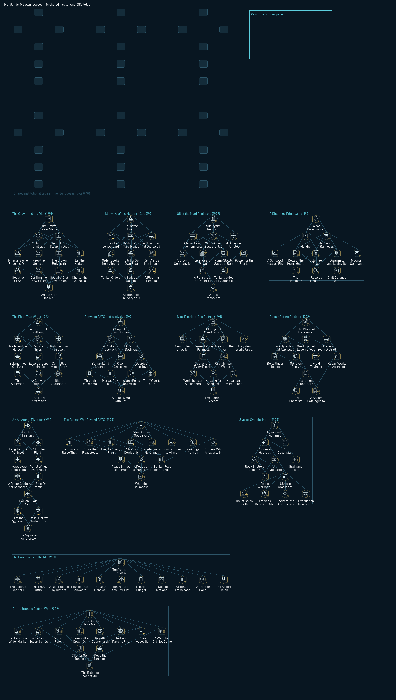
| Branch | Era | Focuses | Filter |
|---|---|---|---|
| The Crown and the Diet | 1991 | 12 | FOCUS_FILTER_POLITICAL |
| Slipways of the Northern Coast | 1991 | 11 | FOCUS_FILTER_INDUSTRY |
| Oil of the Nord Peninsula | 1992 | 11 | FOCUS_FILTER_INDUSTRY |
| A Disarmed Principality | 1991 | 11 | FOCUS_FILTER_MANPOWER |
| The Fleet That Waits | 1992 | 11 | FOCUS_FILTER_NAVY_XP |
| Between FATO and Wielvakia | 1991 | 11 | FOCUS_FILTER_INTERNAL_AFFAIRS |
| Nine Districts, One Budget | 1991 | 11 | FOCUS_FILTER_INTERNAL_AFFAIRS |
| Repair Before Replace | 1992 | 11 | FOCUS_FILTER_RESEARCH |
| An Air Arm of Eighteen | 1993 | 11 | FOCUS_FILTER_AIR_XP |
| The Belkan War Beyond FATO | 1995 | 13 | FOCUS_FILTER_WAR_SUPPORT |
| Ulysses Over the North | 1995 | 12 | FOCUS_FILTER_STABILITY |
| The Principality at the Millennium | 2001 | 12 | FOCUS_FILTER_POLITICAL |
| Oil, Hulls and a Distant War | 2002 | 12 | FOCUS_FILTER_INDUSTRY |
Offices: Crown Cabinet of the Diet (monarchism / constitutional_monarchy); Privy Office of the Crown (monarchism / absolutism); Diet Government of the Principality (democratic / liberalism); Council of Harbours and Wells (neutrality / oligarchism)
The year opens quietly in Aspneset. An Office of the Crown holds the seals of the principality, the diet returned at New Year has been given no date to sit, and elections are suspended until the palace decides otherwise. Nordlands is calm, comfortable and far from any battlefield, and most citizens see no reason to change an arrangement that has kept it so. More than half of them vote for the crown's friends whenever they are allowed to vote.
Calm is not the same thing as consent. Liberal deputies, backed by roughly a quarter of the electorate, want a cabinet that answers to the diet. The shipping, yard and oil houses of the coast pay most of the country's taxes and would prefer to govern through councils of their own. A circle of palace officials believes the Office should simply be confirmed as the government and stop apologising for its existence.
The secretaries of the Office have drafted a stocktaking of who decides what in the principality. Before it begins, they want a ruling on how it will be conducted. In public, it will be slow, noisy and a platform for every faction. Inside the palace, it will be quick, tidy and distrusted from the first day.
Events: Who Holds the Seals; Half the Slipways Idle; Oil Beneath the Peninsula; A Country Without Conscripts; The Fleet That Stays in Harbour; A Capital on the Frontier; War Beyond FATO; Warships at the Harbour Mouth; Officers Who Serve No Country; Pilots Without an Air Force; Ulysses Will Strike; Nine Districts, One Treasury; The Principality at Ten Years; A War on Another Continent; Contraband on the Frontier Roads
Sources: Mod provenance: Inherited Nordlands state: monarchism ruling at 54 percent (democratic 26, fascism 10, neutrality 10, communism 0), elections_allowed = no after a last election on 1991.1.1, stability 0.90, war support 0.10, the disarmed_nation manpower law, the NRL_ac_government_office start leader (Office of the Crown, holder unidentified), grand doctrines superior_firepower, fleet_in_being and operational_integrity, and stockpiles of 300 service tanks, 18 fighters, 3 support aircraft, coastal escort and coastal submarine variants, 1000 convoys and 100 trains.; Mod provenance: Country names: Nordlands Principality under monarchism, democratic and neutrality, Nordlands Union and Nordlands Commune otherwise; adjective Nordlandic. World-start research priority: Physical Sustainment (transport, equipment replacement and affordable service capacity). Registry row: crown_office institution, 9 owned states, capital state 292; its fiscal calibration is not used as a canon claim.; Mod provenance: Geography: 1991 states 254 Nord Peninsula (oil 60, steel 16, 3 arms plants, air base), 257 East Granley (oil 31, aluminium 22, harbour at Eyrarbakki), 277 Norden Forest (4 dockyards, the level-10 naval base, Lundegaard), 292 West Norden (capital, Aspneset, inland, fuel silo), 318 Hait Mountain (tungsten 14), 342 (Djurseryd and Havnaraas, 3 dockyards), 368 Tenese (Nyboholm, 3 dockyards), 373 Haugaland (oil 13, steel 15, 3 arms plants) and 385 Oregonen (Skogaholm). Land neighbours FAT (states 75, 295, 297) and WIE (states 326, 372), computed from map/provinces.bmp. Replaced labels for state 342 and provinces 2825 and 5195 are avoided; no new place is named.; Mod provenance: Campaign hooks read only: belka_dropped_nukes, belka_won_belkan_war and belka_lost_belkan_war (events/Belka.txt); ac_ucw_war_started and ac_ucw_war_averted (common/scripted_effects/ac_ucw.txt). No Nordlandic role is assumed.; Official: Date anchor only: Belka sells northern territory to FATO and eastern lands to eastern neighbours. No Nordlandic border, claim or role follows from it.; Official: Date anchor only: Belkan borders are redrawn.; Official: Date anchor only: the IAU warns that the asteroid Ulysses may strike the Earth.; Official: Date anchor only: the Belkan War breaks out. Nordlands is not claimed as a party.; Official: Date anchor only: seven nuclear devices are used in the Waldreich Mountains; the tree reads the mod flag belka_dropped_nukes rather than the date.; Official: Date anchor only: a treaty is signed in Lumen and the Belkan War ends; the tree reads the mod flag belka_lost_belkan_war rather than the date.; Official: Date anchor only: A World With No Boundaries launches a coup.; Official: Date anchor only: the Allied Forces attack the V2 facilities at Avalon Dam and defeat the rebellion.; Official: Date anchor only: the FCU President announces that Ulysses will impact the Earth.; Official: Date anchor only: former top Belkan Air Force pilots are hired by various countries as aggressor squadrons. Whether Nordlands hires any is a gameplay choice.; Official: Date anchor only: Ulysses passes through the Roche limit.; Official: Date anchor only: Osea and Yuktobania agree to convert the Arkbird to clear orbital debris.; Official: Context only: Erusea invades the neutral country of San Salvacion; the tree reads the mod flag ac_ucw_war_started rather than a date.; Provisional gameplay: All Nordlandic focuses, ideas, offices, buildings, flags, decisions and events in this spec. No named people; offices are collective and unnamed; no border, core, war, annexation or faction effects.
143 own focuses, 13 branches, 36 shared institutional focuses, 13 events, 58 ideas, 4 offices.

| Branch | Era | Focuses | Filter |
|---|---|---|---|
| The Crown Question | 1991 | 14 | FOCUS_FILTER_POLITICAL |
| The Four Crown Lands | 1991 | 11 | FOCUS_FILTER_INTERNAL_AFFAIRS |
| The Heavy Industry Reckoning | 1991 | 13 | FOCUS_FILTER_INDUSTRY |
| The Year of Service | 1991 | 11 | FOCUS_FILTER_MANPOWER |
| Gatewood Electronics | 1992 | 10 | FOCUS_FILTER_RESEARCH |
| The Belkan War Next Door | 1995 | 12 | FOCUS_FILTER_WAR_SUPPORT |
| The Serenava Air Arm | 1993 | 9 | FOCUS_FILTER_AIR_XP |
| Sofern and the Coast | 1993 | 9 | FOCUS_FILTER_NAVY_XP |
| After the War Years | 1996 | 11 | FOCUS_FILTER_STABILITY |
| Terentio Oil and Ore | 2000 | 10 | FOCUS_FILTER_INDUSTRY |
| The Kingdom at the Millennium | 2003 | 14 | FOCUS_FILTER_POLITICAL |
| A Neighbour at War | 2010 | 9 | FOCUS_FILTER_WAR_SUPPORT |
| The Network Years | 2016 | 10 | FOCUS_FILTER_RESEARCH |
Offices: Crown Ministry of the Chamber (monarchism / constitutional_monarchy); Privy Council of the Crown Lands (monarchism / absolutism); Crown Directorate of Order (monarchism / perblan_totalitarianism); Assembly Government of the Four Lands (democratic / social_democracy)
The session opens in the old throne hall at Gatewood with the usual music and an unusual agenda. For the first time in living memory the clerks have placed the government itself on the order paper. Perbla is a kingdom of four crown lands held together by one throne, a century-old service year and an economy that leans on its arms plants. Each of those pillars now has a faction that wants it rebuilt.
The constitutional camp wants ministers who answer to an elected chamber. The palace party wants the seals returned to a privy council that can act without waiting for votes. A harder faction speaks of order above all, of a crown that governs by decree because elected governments always drift back to greed. Deputies from the outer lands ask whether the crown needs to govern at all, or only to reign.
None of these camps commands a majority today. What the court decides in this first session is not which answer wins, but how the question will be argued: in the open, with the chamber and the press watching, or behind the palace doors. Either way, the arms trusts, the officer corps and the four lands are already counting their friends.
Events: The Crown Question; Four Lands, One Throne; The Unfinished Plants; One Firm, One Kingdom; The Service Year Debate; War Beyond the Frontier; The Old Alliance Debated; Ulysses in the Night Sky; Oil Under Terentio; Ten Years On; The Monday Morning Exercise; A Neighbour at War; Drones Over the Harbours
Sources: Mod provenance: Inherited Perbla state: monarchism ruling at 70 percent popularity with a constitutional_monarchy leader; ideas PBL_mandatory_service, PBL_eco_crisis_1, PBL_south_belka_munitions, PBL_federal_kingdom and PBL_electronics. The tree builds on these ideas and never removes or edits them.; Mod provenance: The inherited intervention path: perbla_intervention.1 to .3, fired by a Belkan decision only when PBL holds pbl_help_belka_flag (a 1 percent roll at game start), plus the historical_friends (BLK) and historical_enemies (OSE) opinion modifiers. The 1995 branch debates the old alliance but commits no forces and never sets that flag.; Mod provenance: perblan_totalitarianism is an archive monarchism sub-ideology (can_be_randomly_selected = no); used only for the unnamed Crown Directorate of Order office.; Mod provenance: Geography: 1991 states 112, 173, 207, 209, 236, 389 (capital), 571, 581, 592, 597 and 601; crown-land cores REL (173, 207, 236, 597), TER (209, 571) and SER (581); DAK claims on 209 and 571; land neighbours OSE (via 581), DAK and ARK, computed from map/provinces.bmp. Place names come from existing state and victory point localisation.; Official: Date anchors for regional pressure only: the Belkan War breaks out (1995 / 03.25); the Ulysses warnings (1994 / 12.10 and 1996 / 04.20); the Circum-Pacific War begins (2010 / 09.27); drone strikes on four Osean naval ports as the Lighthouse War begins (2019 / 05.15); satellites destroyed and Usean network communications cut (2019 / 09.19). No Perblan role in any of them is claimed.; Provisional gameplay: All Perblan focuses, ideas, offices, buildings, flags and events in this spec. No named people; offices are collective and unnamed; no border, core, war, annexation or faction effects.
97 own focuses, 9 branches, 36 shared institutional focuses, 9 events, 66 ideas, 3 offices.
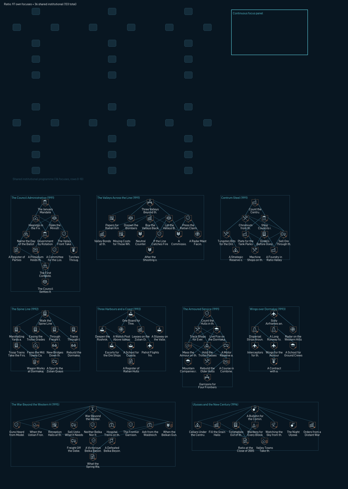
| Branch | Era | Focuses | Filter |
|---|---|---|---|
| The Council Administration | 1991 | 12 | FOCUS_FILTER_POLITICAL |
| The Valleys Across the Line | 1991 | 13 | FOCUS_FILTER_POLITICAL |
| Centrum Steel | 1991 | 10 | FOCUS_FILTER_INDUSTRY |
| The Spine Line | 1992 | 11 | FOCUS_FILTER_INDUSTRY |
| Three Harbours and a Coast | 1992 | 9 | FOCUS_FILTER_NAVY_XP |
| The Armoured Service | 1991 | 10 | FOCUS_FILTER_ARMY_XP |
| Wings over Dormakaj | 1993 | 8 | FOCUS_FILTER_AIR_XP |
| The War Beyond the Western Hills | 1995 | 14 | FOCUS_FILTER_WAR_SUPPORT |
| Ulysses and the New Century | 1996 | 10 | FOCUS_FILTER_STABILITY |
Offices: The Elected Council of Ratio (democratic / liberalism); Presidium of the Standing Council (neutrality / centrism_na); Committee of National Restoration (fascism / ultranationalism)
The council hall at Centrum fills early on the morning the ministries finally put their own mandate on the agenda. The January vote of 1991 left the democratic camp with the goodwill of roughly seven Ratians in ten, yet the administration that vote produced has suspended the next ballot indefinitely, and its ministries pass the chair among themselves without asking anyone outside the hall.
Three camps take their seats. The liberal wing wants a date for the next ballot printed before the session closes. The ministry heads argue that rotation has kept the country solvent and calm, and that a campaign would only hand the valley question to whoever shouts loudest. On the back benches a smaller nationalist group says nothing yet, and waits to see how the valleys debate goes.
Nobody expects a decision today. The real quarrel is over who writes the options paper the council will vote on next season. The ministries offer their own legal staff, who know every statute and every shortcut. The district councils want a drafting commission of their own members, slower and less expert, but much harder to accuse of writing the answer in advance.
Events: A Council Without a Calendar; What the Valleys Are Worth; The Furnace Count at Centrum; Three Harbours, Three Rulebooks; Three Hundred Hulls; Spring War on Two Frontiers; Crowds at the Dormakaj Crossings; Ratio Waits for Ulysses; Counting the Cost of the Ustian War
Sources: Mod provenance: Inherited 1991 state: ruling party democratic with elections_allowed = no after a last election dated 1 January 1991 (election_frequency 48); popularities democratic 70, fascism 16, neutrality 11, communism 3; stability 0.85 and war support 0.40; ideas nuke_lvl_1 and generic_defensive_army_1; grand doctrines superior_firepower, new_fleet_in_being and new_operational_integrity; tech_mountaineers among the starting technology. The starting leader is the unnamed National Administration office (RAT_ac_government_office, centrism), whose description says its 1991 holder has not been established; the institution profile is a council office (ac_pol_form_council_office). The tree never names a holder.; Mod provenance: Geography: 1991 states 306, 388 (capital), 419, 472 and 489. State 388 is Centrum (large city; forest, hills and mountain; steel 38, oil 12, tungsten 12; three civilian and three military factories, the fuel silo, air base 4). State 306 is a large city of plains, forest and mountain whose Earth-template caption the regional labels replaced with Ratio District A; the tree calls it by its largest victory point, Dormakaj (three civilian and three military factories, air base 6, oil 12, tungsten 13). State 419 is Troton Mountains (city; mountain and hills; steel 26, chromium 17, tungsten 16; naval bases at Roshniku and Isakas; two dockyards). State 472 is Ratio Valley (rural; five provinces, two on the coast; one civilian factory). State 489 is Zulian Coast (city; plains and urban; oil 33, steel 31; naval bases including Sukaxhija; two dockyards). Land neighbours from map/provinces.bmp: Ustio (Boikos, against Dormakaj), Gebet (Dormakaj), Wiesmont (Dormakaj, Centrum, Troton Mountains) and Sapin (Dormakaj, Centrum, Ratio Valley, Zulian Coast). Railways from map/railways.txt: a level-3 trunk from Gebet through Dormakaj to Centrum, level-2 lines from Centrum to the Troton Mountains, Ratio Valley and the Zulian Coast, and level-1 links into Boikos, Wiesmont and Sapin. No other place is named.; Provisional gameplay: World-start calibration the tree builds on: a retained authored army of four tank, four infantry and four motorised divisions with 300 modern tanks in stock; 11 civilian, 10 military and 4 naval factories; 48 fighters and 12 support aircraft; three destroyers and one submarine; 200 convoys; fiscal profile GDP 536.79, debt ratio 0.3, collection 0.85. Fictional calibration, not canon national accounts or order of battle.; Mod provenance: The Ustio-Ratio dispute: Tyrann Valley (336), Boikos (365) and the Jeszczed Mountains (376) are owned by Ustio in 1991 with cores of both countries; Ustio texts say Belka took them from Ratio in its years of expansion, that they stayed with Ustio after the 1988 review, that their people are mostly Ratian and that Ratio never renounced the claim (ustio.1, UST_deal, ac_news_event.2). Inherited outcomes: the purchase (UST_deal), Ratio pledging help against Belka (ustio.6), Ratian partisans and border incidents (UST_vs_RAT_resistance, ustio.7 to ustio.11), the Yuktobanian referendum proposal (ustio.14), Sapin choosing a side (sapin_diplomacy.1) and the war flagged by first_ustian_war. The CANON_LEDGER row keeps all of this mod provenance. This tree reads only first_ustian_war and never moves a state, core or claim, starts a war or ends one.; Mod provenance: Neighbour consistency: no other world-depth spec names Ratio, and Ustio, Gebet, Wiesmont and Sapin have no world-depth spec. The tree keeps faith with the inherited Ustio texts: Ratio friendly to Ustio and nowhere near friendly with Belka (UST_deal, UST_ask_ratio_for_help), Ratian partisans outside Centrum control, and the purchase and referendum answers belonging to Ustio. It claims no action, consent or outcome for any neighbour.; Official: Date context: the Republic of Ustio gains its independence. Background to the valleys question only; the Chronicle says nothing about the dispute.; Official: Belka sells its eastern territory to neighbouring eastern nations, which the Chronicle does not name. Regional pressure only; no Ratian purchase from Belka is claimed.; Official: Date anchor: the Belkan War breaks out. Date gate of the war branch; Ratio takes no part.; Official: An assault on Model, a border city in Gebet. Premise of the Gebet line focus, which also reads the mod flag ac_bwr_model.; Official: Nearly all of Ustio falls under Belkan control. Premise of the Ustian front focus, which also reads the mod flag ac_bwr_monte_rosa.; Official: The Belkan Army uses seven nuclear devices in the Waldreich Mountains. Premise of the fallout focus, which also reads belka_dropped_nukes; no fallout in Ratio is claimed.; Official: A treaty is signed in Lumen and the Belkan War ends. Date gate of the stand-down focus, which also waits until belkan_war_is_happening is clear.; Official: The President of the FCU announces that Ulysses will impact the Earth. Date gate of the Ulysses branch; where fragments fall is never stated.; Official: Former top pilots from the Belkan Air Force are hired by various countries as aggressor squadrons. Date gate of the aggressor focus; no individual is named and no hire by Ratio is claimed as fact.; Official: Ulysses passes through the Roche limit of the Earth. Date gate of the recovery crews focus; no damage in Ratio is claimed.; Mod provenance: Campaign hooks read only, never set: first_ustian_war (set by ustio.12, the UST_ratio_war_timer mission and UST_strike_first; cleared by ustio.19 and ustio.20), ac_bwr_model and ac_bwr_monte_rosa (common/scripted_effects/ac_belkan_record.txt), belkan_war_is_happening, belka_won_belkan_war, belka_lost_belkan_war and belka_dropped_nukes (events/Belka.txt and common/decisions/BLK_decisions.txt), and ac_ucw_war_started (common/scripted_effects/ac_ucw.txt). Outcome reactions are leaf focuses, so no outcome blocks the tree.; Provisional gameplay: All Ratian focuses, ideas, offices, buildings, flags, decisions and events in this spec. No named people; offices are collective and unnamed; no border, core, claim, war, peace, annexation or faction effects; buildings only in the five 1991 states and within their free slots.
99 own focuses, 9 branches, 36 shared institutional focuses, 11 events, 48 ideas, 3 offices.
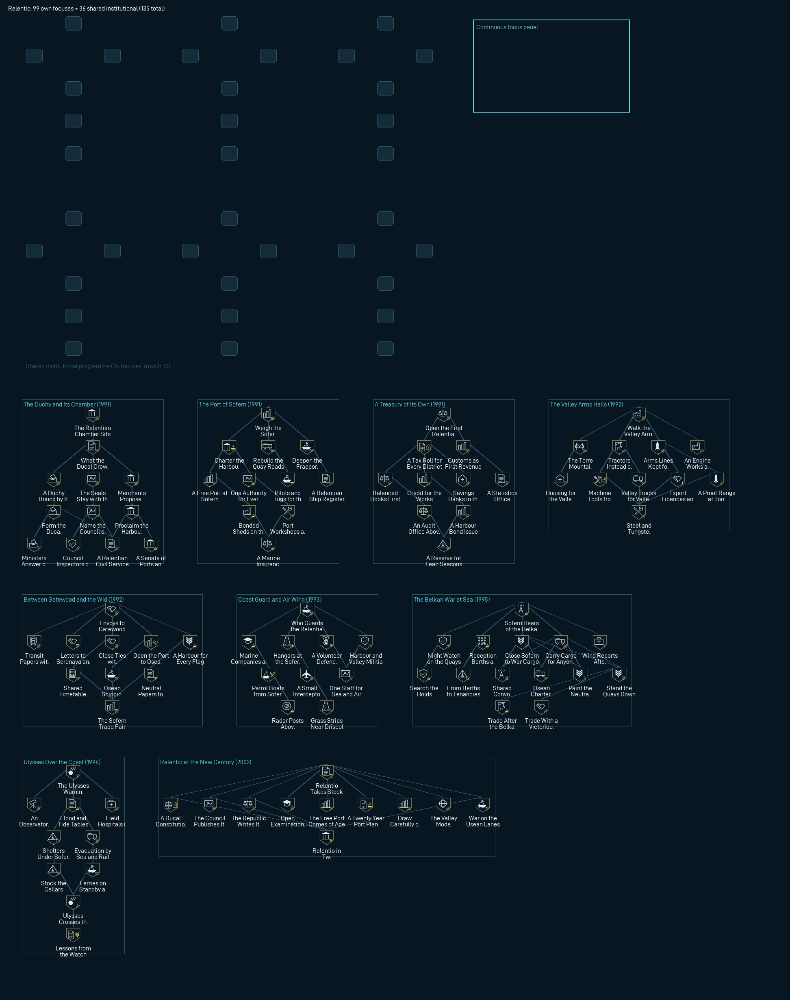
| Branch | Era | Focuses | Filter |
|---|---|---|---|
| The Duchy and Its Chamber | 1991 | 12 | FOCUS_FILTER_POLITICAL |
| The Port of Sofern | 1991 | 11 | FOCUS_FILTER_INDUSTRY |
| A Treasury of Its Own | 1991 | 10 | FOCUS_FILTER_STABILITY |
| The Valley Arms Halls | 1992 | 11 | FOCUS_FILTER_INDUSTRY |
| Between Gatewood and the Wider World | 1992 | 10 | FOCUS_FILTER_POLITICAL |
| Coast Guard and Air Wing | 1993 | 10 | FOCUS_FILTER_NAVY_XP |
| The Belkan War at Sea | 1995 | 14 | FOCUS_FILTER_WAR_SUPPORT |
| Ulysses Over the Coast | 1996 | 10 | FOCUS_FILTER_STABILITY |
| Relentio at the New Century | 2002 | 11 | FOCUS_FILTER_POLITICAL |
Offices: Ducal Ministry of the Chamber (monarchism / constitutional_monarchy); Council of the Ducal Seals (monarchism / absolutism); Executive Council of the Harbour Republic (democratic / liberalism)
The chamber meets for its first full session in a hall borrowed from the Sofern harbour councils, because no building in Relentio was designed to hold a national parliament. The ducal office sends its clerk with a short message: the seals are kept, the coast guard is paid and a budget will follow. Everything else, the message says, is for the chamber to argue.
And argue it does. Shipowners from Sofern want a government that moves as quickly as a freight market. Deputies from the Relentio valley around Driscol want protection for the arms halls and the wages they pay. The Torre Mountain districts, smallest of all, want a guarantee that the coast will not outvote them on every question. A few voices ask whether a ducal crown suits a state of merchants at all.
No camp holds a majority today. What the session can decide is how the question will be argued: openly, with the press gallery full and every speech printed, or quietly, in committee rooms where bargains are easier to strike and harder to explain. Either way, the shipping lines, the valley unions and the officer corps are already counting their friends.
Events: Who Governs Relentio; The Sofern Customs Count; The First Relentian Budget; Silence in the Valley Halls; Envoys at Gatewood; War on the Shipping Lanes; The Held Freighter; A Coast Under Ulysses; The Watch Night; An Account of the State; A Trade Mission Returns
Sources: Mod provenance: Inherited Relentio history: monarchism ruling at 70 percent popularity, elections not allowed, no starting ideas, and the REL_ac_government_office character (Office of the Crown, constitutional_monarchy, no named holder). The country is the Duchy of Relentio under monarchism and the Republic of Relentio under every other ideology.; Mod provenance: Release-country scope: REL owns no state in 1991; its cores are 173, 207, 236 and 597 (all owned by PBL) and its history capital is 581. tools/release_foundations owns when and how Relentio exists; this tree assumes neither, and its builds target only the four cores under owns_state guards.; Mod provenance: Geography and place names from existing localisation only: Faroe (173, victory point Driscol), Torre Mountain (207), Sofern (236, victory point Sofern), North Relentio (597, victory point Fraeport). Resources and buildings from the state histories. Neighbouring names (Perbla, Gatewood, Serenava, Terentio) come from the Perbla spec and localisation.; Mod provenance: Consistency with the approved Perbla tree: Relentio as the crown land of the Sofern docks and its harbour councils, the arms halls of the Relentio valley, and Torre Mountain inland. Nothing here narrates which Perblan focuses were taken before Relentio governs itself.; Mod provenance: Campaign hooks read only outcomes the mod already records: belka_lost_belkan_war and belka_won_belkan_war, set by the Belkan War events, and belka_dropped_nukes. Each is a separate gameplay branch; none is asserted as history.; Official: Date anchor only: the Ulysses close-approach warning.; Official: Date anchor only: the Belkan War breaks out.; Official: Date anchor only: Belkan nuclear devices in the Waldreich Mountains.; Official: Date anchor only: the treaty signed in Lumen ends the Belkan War.; Official: Date anchor only: the announcement that Ulysses will strike the Earth.; Official: Date anchor only: Ulysses passes through the Roche limit.; Official: Date anchor only: the FCU demand to Erusea and the founding of the ISAF in Usea.; Provisional gameplay: All Relentian focuses, ideas, offices, decisions, buildings, flags and events in this spec. No named people; offices are collective and unnamed; no border, core, war, annexation or faction effects; no new place names.
90 own focuses, 9 branches, 36 shared institutional focuses, 11 events, 59 ideas, 3 offices.
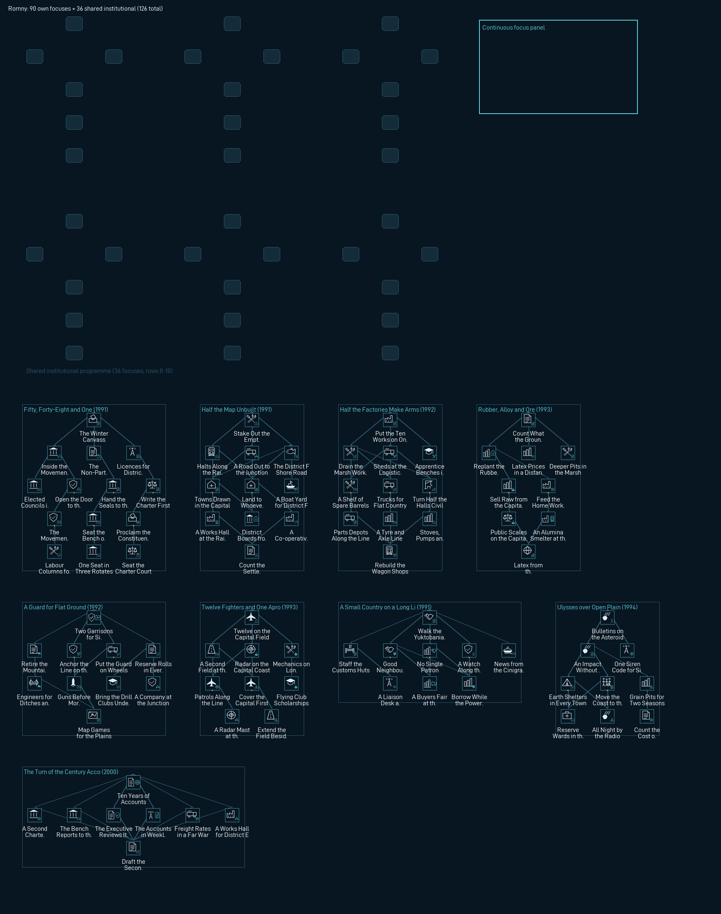
| Branch | Era | Focuses | Filter |
|---|---|---|---|
| Fifty, Forty-Eight and One | 1991 | 14 | FOCUS_FILTER_POLITICAL |
| Half the Map Unbuilt | 1991 | 11 | FOCUS_FILTER_INTERNAL_AFFAIRS |
| Half the Factories Make Arms | 1992 | 11 | FOCUS_FILTER_INDUSTRY |
| Rubber, Alloy and Ore | 1993 | 9 | FOCUS_FILTER_RESEARCH |
| A Guard for Flat Ground | 1992 | 10 | FOCUS_FILTER_ARMY_XP |
| Twelve Fighters and One Apron | 1993 | 9 | FOCUS_FILTER_AIR_XP |
| A Small Country on a Long Line | 1991 | 9 | FOCUS_FILTER_POLITICAL |
| Ulysses over Open Plain | 1994 | 9 | FOCUS_FILTER_STABILITY |
| The Turn of the Century Accounts | 2000 | 8 | FOCUS_FILTER_RESEARCH |
Offices: Cabinet Under the Entrenched Charter (democratic / liberalism); Bench of the Six Districts (neutrality / conservatism_na); Executive Committee of the National Movement (fascism / ultranationalism)
The canvassers come back from the six districts in the first weeks of the year with notebooks, tally sheets and sore feet. Their count is simple to state and hard to read aloud. Half of the country's adults say they follow the national movement. Nearly as many want government by non-party notables and administrators. One in a hundred backs the democratic colours under which the National Administration governs, and another one in a hundred the labour left.
The Administration has run Romny with its election calendar shut. It has kept the works open, the guard paid and the capital quay busy, but it has not built a following of any size. The national movement fills halls beside the arms works and the logistics centre, while the notables run the co-operatives, the district offices and most of the trade without belonging to any party at all.
Neither camp is a majority on its own, and neither will accept the other's government willingly. Before any minister proposes what Romny should become, the cabinet must decide what to do with the count itself. Printed in full, it tells both camps exactly how strong they are. Filed with the cabinet, it guides the Administration for a season and leaks within the year.
Events: The Canvass Returns; A Rally at the Logistics Centre; Pegs Across Empty Ground; The Works Sheet Is Read; Latex, Bauxite and Rock; Where the Guard Sleeps; The Air Arm Is Counted; The Line on the Plain; The Plain Has No Caves; The Volume on the Table; Letters to the Accounts
Sources: Mod provenance: Inherited 1991 state: ruling_party democratic with elections_allowed = no and election_frequency 48; popularities fascism 50, neutrality 48, democratic 1, communism 1; stability and war support 0.5; three research slots; technology including tech_mountaineers, tech_engineers, early_fighter and basic_train; grand doctrines superior_firepower, new_fleet_in_being and new_operational_integrity. The starting leader is the unnamed National Administration office (RMN_ac_government_office, centrism), whose description says its 1991 holder has not been established. Country name Romny. The tree never names a holder and reads the party figures as context, not as proof of constitutional form.; Provisional gameplay: World-start calibration the tree builds on: role limited air and territorial guard; 5 civilian, 5 military and no naval factories; 4 infantry formations of six battalions, each with an engineer company, two at the capital centre (9428) and two at the logistics centre (3787); 12 fighters on the capital air base with 4 in reserve; no combat navy by design; 60 convoys; stocks of 960 infantry, 720 motorized, 24 train and 192 support equipment; research priority Physical Sustainment (transport, equipment replacement, affordable service). Fiscal profile GDP 120, debt ratio 0.3, collection 0.85, growth 3, inflation 2 is fictional gameplay calibration, not national accounts.; Mod provenance: Geography: 1991 states 85 (capital, large town, captioned Romny Capital District; victory point Romny Capital Centre 9428 with naval base 1; 2 civilian, 2 military, fuel silo 1, air base 1, infrastructure 2; steel 4, aluminium 4, oil 2, rubber 2; plains, coastal; every shared slot in use), 536 (Romny District B; Romny Logistics Centre 3787; 2 civilian, 1 military, infrastructure 2; steel 4, aluminium 3, rubber 2, oil 1; plains, coastal), 541 (marsh, inland; 1 civilian, 2 military, infrastructure 2; steel 4, aluminium 3, rubber 1, oil 1), 549 (plains, coastal; no buildings, infrastructure or resources), 561 (Romny District E; plains, coastal; empty) and 573 (Romny District F; plains, coastal; empty). States 541 and 549 keep inherited Earth-template names, which this tree does not use; they are called the marsh district and the rail-corner district by function. Railways (map/railways.txt): level-2 lines 9428 to 3787 through province 1143 of state 549, and 9428 to 9236 in state 541; no line crosses a frontier. Land neighbours from map/provinces.bmp: Yuktobania (536, 541, 561) and Kaluga (561). The capital district borders all five other districts. No other place is named.; Mod provenance: Neighbour consistency: Kaluga (tools/world_depth/klg/content.py) describes Romny and Yuktobania meeting its junction district. This tree acts only on the Romny side of that corner (District E) and claims no action, consent or outcome for Kaluga or Yuktobania.; Official: Date anchor: Scinfaxi-class submarines are announced at a political convention in Cinigrad, Yuktobania. Gate of the coast-watch focus; no Romny role is claimed and no person is named.; Official: Date anchor: the International Astronomical Union announces that Ulysses will pass close to Earth with a chance of impact. Opens the asteroid branch; no Romny role is claimed.; Official: Date anchor: the Belkan War breaks out. Gate of the wartime commodity price focus; Romny takes no part.; Official: Date anchor: the President of the FCU announces that Ulysses will impact the Earth. Gate of the impact focus and its event; where fragments fall is never stated for Romny.; Official: Date anchor: Ulysses passes through the Roche limit. Gate of the Roche-limit focus; no impact in Romny is claimed.; Official: Date anchor: Osea and Yuktobania cooperate to convert the Arkbird into a debris-clearing platform. Gate of the credit focus, read only as a change in lending mood; Romny has no part in the project.; Official: Date anchor: the FCU demands that Erusea withdraw from San Salvacion and establishes the ISAF. The freight focus waits for the mod flag ac_ucw_isaf_formed and claims no Romny part in the war.; Provisional gameplay: All focuses, ideas, offices, buildings, flags, decisions and events in this spec. No named people; offices are collective and unnamed; no border, core, war, annexation or faction effects.
94 own focuses, 10 branches, 36 shared institutional focuses, 16 events, 64 ideas, 3 offices.
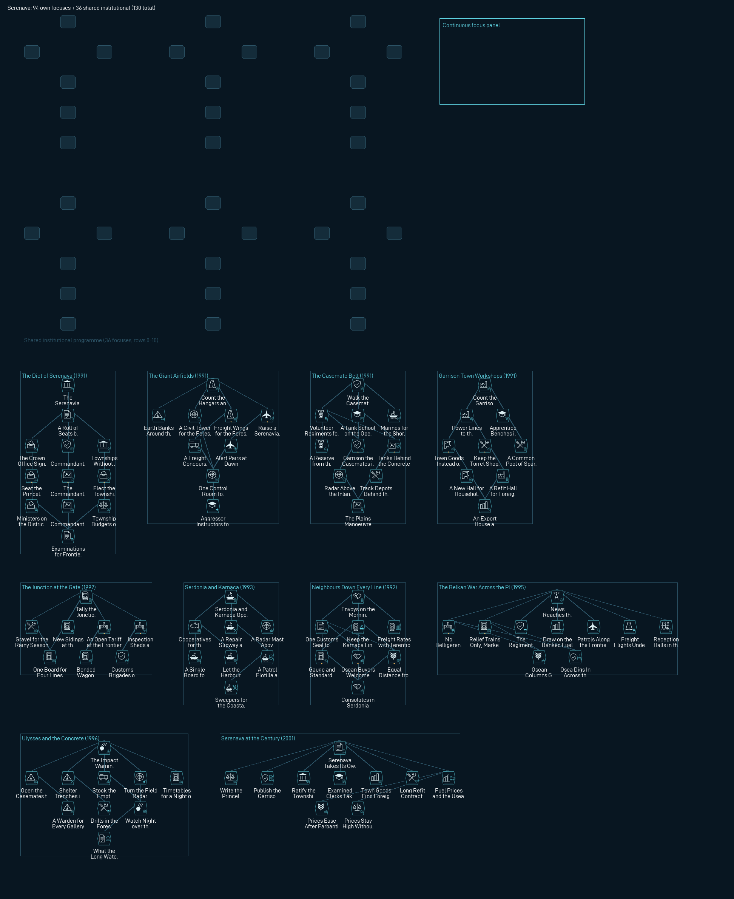
| Branch | Era | Focuses | Filter |
|---|---|---|---|
| The Diet of Serenava | 1991 | 12 | FOCUS_FILTER_POLITICAL |
| The Giant Airfields | 1991 | 9 | FOCUS_FILTER_AIR_XP |
| The Casemate Belt | 1991 | 10 | FOCUS_FILTER_ARMY_XP |
| Garrison Town Workshops | 1991 | 9 | FOCUS_FILTER_INDUSTRY |
| The Junction at the Gate | 1992 | 8 | FOCUS_FILTER_INTERNAL_AFFAIRS |
| Serdonia and Karnaca | 1993 | 8 | FOCUS_FILTER_NAVY_XP |
| Neighbours Down Every Line | 1992 | 8 | FOCUS_FILTER_POLITICAL |
| The Belkan War Across the Plains | 1995 | 10 | FOCUS_FILTER_WAR_SUPPORT |
| Ulysses and the Concrete | 1996 | 10 | FOCUS_FILTER_STABILITY |
| Serenava at the Century | 2001 | 10 | FOCUS_FILTER_POLITICAL |
Offices: Cabinet of the Principality (monarchism / constitutional_monarchy); Council of Frontier Commandants (neutrality / stratocracy); Executive of the Serenavian Townships (democratic / centrism)
The first full sitting of the Serenavian diet takes place in a drill hall at Serdonia, because the only rooms large enough for every deputy were built for soldiers. Rifle racks have been carried out and benches carried in, and the painted lines for parade still show beneath the borrowed carpets. The Office of the Crown sends a written greeting and a short list of what it already handles: the seals, the garrison payroll and the frontier posts.
The deputies arrive with very different instructions. Members from the garrison towns want the commandants heard on every budget, since the regiments employ half the inland districts. The harbour wards of Serdonia and Karnaca want customs and fishing rules settled before anything else. The forest districts want roads, schools and a voice that is not drowned out by uniforms or ships. Most deputies sit with the monarchist majority, and even they disagree about how much the crown office should do on its own.
Before any law can pass, the diet has to agree how it will work at all. One proposal borrows a complete set of standing orders from an older chamber and adopts it in a single day, giving the clerks a rulebook they already know. The other asks the deputies to write their own, slowly and clause by clause, so that every district can see its interests in the procedure itself.
Events: The Diet in a Drill Hall; Hangars Built for Someone Else; Concrete Along the Line; The Workshop Floor Count; Freight at the Junction; Serdonia and Karnaca Compare Books; Four Calls in One Week; The War Beyond the Line; Observers at the Inland Post; The Asteroid and the Casemates; Radar Watch on the Roche Night; Instructors Who Once Flew for Belka; The First Aggressor Report; The Frontier Takes Stock; Fuel Bills from a Distant War; Market Day at the Crossing
Sources: Mod provenance: Inherited Serenava history: monarchism ruling at 70 percent popularity with fascism, democratic and communism at 10 and neutrality at 0; elections not allowed (frequency 48); stability and war support 0.8; three research slots; no starting ideas; starting technology of battle tanks, infantry fighting vehicles, motorised rockets, marines and interwar anti-air, with no aircraft technology. The starting leader is the unnamed Office of the Crown (SER_ac_government_office, constitutional_monarchy), whose holder has not been established; the tree never names one.; Mod provenance: Country names per party: Principality of Serenava (monarchism), Republic of Serenava (democratic and neutrality), Socialist Federation of Serenava (communism), Serenavian State (fascism); adjective Serenavian. The three political answers here keep the Principality or the Republic names; no socialist or fascist path is offered.; Mod provenance: Release-country scope: SER owns no state in 1991; its only core is 581 (owned and cored by PBL) and its history capital is 236 (a PBL and REL core). The generic core release case in the release intake places the capital in 581 at province 5535 and does not retain 236. tools/release_foundations owns when and how Serenava exists; this tree assumes neither, and every build targets 581 under an owns_state guard. The release network-repair decision is hidden because the footprint is already connected, so no branch is built around network repair. Opening laws from the intake: civilian_economy, export_focus and volunteer_only.; Mod provenance: Geography of state 581 (captioned Serenava): state category large_city with eight shared slots, three civilian and two arms plants (three slots free), infrastructure 3, air base 10 (at its cap) with the airport on forest province 9499, naval base 4 at Serdonia (5535, victory point 35) and naval base 5 at Karnaca (2999, victory point 30), level-5 bunkers on plains provinces 2257 (inland, on the rail line to the Osean state 544, captioned Wadsworth), 9475 and 11343 (both coastal). Twelve provinces of plains and forest with two urban ports; supply nodes on 2999, 5535 and 9499; level-2 railways to Gatewood Forest (389, via Baleton), Old Perbla (601), Faroe (173, via Driscol) and North Relentio (597, via Fraeport). Strategic region South Osean Gate (34): 18 to 35 degrees, light and heavy rain, mud, no snow. Place names come only from existing state, victory point and strategic region localisation.; Mod provenance: Consistency with the approved Perbla tree: Serenava as the crown land facing Osea, with the giant airfields, the bunker lines and the garrison towns and their workshops. Nothing here narrates which Perblan focuses were taken before Serenava governs itself, and nothing reuses the Relentio tree (tools/world_depth/rel/content.py).; Mod provenance: Campaign hooks read only outcomes the mod already records: belka_lost_belkan_war and belka_won_belkan_war, set by the Belkan War events, and ac_ucw_outcome_isaf_victory and ac_ucw_outcome_erusean_victory, set by the Usean war script. Each is a separate gameplay branch; none is asserted as history.; Official: Date anchor only: the Ulysses close-approach warning.; Official: Date anchor only: the Belkan War breaks out.; Official: Date anchor only: the announcement that Ulysses will strike the Earth.; Official: Date anchor only: former Belkan Air Force pilots are hired by various countries as aggressor squadrons.; Official: Date anchor only: Ulysses passes through the Roche limit.; Official: Date anchor only: the FCU demand to Erusea and the founding of the ISAF in Usea.; Official: Date anchor only: Farbanti falls and Erusea surrenders, ending the Continental War.; Provisional gameplay: All Serenavian focuses, ideas, offices, decisions, buildings, flags and events in this spec. No named people; offices are collective and unnamed; no border, core, war, annexation or faction effects; no new place names.
101 own focuses, 11 branches, 36 shared institutional focuses, 12 events, 67 ideas, 3 offices.
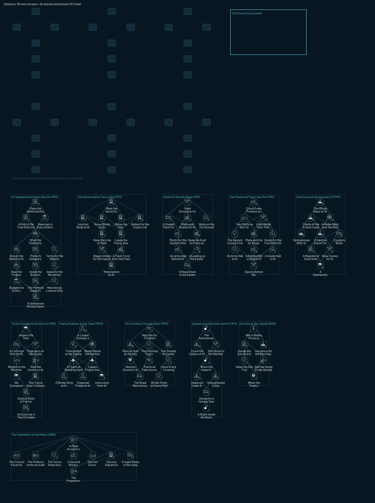
| Branch | Era | Focuses | Filter |
|---|---|---|---|
| A Federation Run from One Desk | 1991 | 14 | FOCUS_FILTER_POLITICAL |
| The Spine and Its Two Limbs | 1991 | 10 | FOCUS_FILTER_INDUSTRY |
| District E Has No Road | 1991 | 9 | FOCUS_FILTER_INTERNAL_AFFAIRS |
| Ten Plants and Two Free Plots | 1991 | 10 | FOCUS_FILTER_INDUSTRY |
| One Escort at the Southern Port | 1991 | 9 | FOCUS_FILTER_NAVY_XP |
| Three Formations for Six Frontiers | 1992 | 9 | FOCUS_FILTER_ARMY_XP |
| Twelve Fighters at the Capital Field | 1993 | 8 | FOCUS_FILTER_AIR_XP |
| Six Frontiers Through District B | 1992 | 9 | FOCUS_FILTER_POLITICAL |
| Ulysses over Mountain and Plain | 1994 | 8 | FOCUS_FILTER_STABILITY |
| One Silo at the Capital | 1995 | 6 | FOCUS_FILTER_WAR_SUPPORT |
| The Federation at the Millennium | 2000 | 9 | FOCUS_FILTER_POLITICAL |
Offices: Federal Council of the Five Districts (democratic / conservatism); Board of District Prefects (neutrality / conservatism_na); Executive of the Majority Movement (fascism / fascism_ideology)
The pollsters' sealed figures reach the National Administration on a wet morning at the Capital Centre, and they confirm what every district already suspects. The democratic party that lends the government its name holds the loyalty of about one voter in a hundred. Half the country leans toward the movement that promises discipline and a stronger service. Nearly all the rest would keep the administrators who run the five districts without a ballot.
The Administration has never claimed to be popular, only competent. Its offices keep the trains on the spine moving, pay the three formations and settle the accounts of ten plants. Yet the country still calls itself a federation, and the districts ask what that word means when every decision is signed at one desk in the capital. District E has no road, District B has six frontiers and the southern port has one escort.
Nobody expects the figures to stay sealed for long. The movement's organisers have their own counts, and the district notables will hear by the weekend. The Administration can publish the polling and start an argument it cannot steer, or hold the figures back and let rumour do the work. Either way the question of who governs Seterano is open now, and it will not close quietly.
Events: One Voter in a Hundred; Crates of Signatures on the Steps; Notebooks from the Line; Four Provinces and No Paved Road; Ten Plants and Their Furnaces; A Navy of One Hull; Eighteen Battalions and Six Frontiers; Six Neighbours on One Wall; A Paragraph Between the Weather and the Trains; A Summer Night of Waiting; Crude Prices and a Distant War; The Account Without a Foreword
Sources: Mod provenance: Inherited 1991 politics: ruling_party democratic with elections_allowed = no and election_frequency 48; popularities fascism 50, neutrality 48, democratic 1, communism 1; stability and war support 0.5; three research slots; tech_mountaineers, early_fighter and basic_train among the starting technologies. The starting leader is the unnamed National Administration office (SET_ac_government_office, centrism), whose 1991 holder has not been established. The tree never names a holder.; Mod provenance: Country names per party: Seteranoan Federation (democratic and neutrality), Union of Seteranoan Republics (communism), Seteranoan Empire (fascism), Kingdom of Seterano (monarchism); adjective Seteranoan. The federal council and prefect paths keep the Federation names. The movement path takes the existing fascism name from the localisation; no claim, core, war, annexation or expansion follows from it, and its written terms forbid them.; Mod provenance: Geography: five 1991 states captioned by the neutral regional labels (canonical regional mapping unestablished). State 362, Seterano Capital District (capital, large_town, five slots all filled by 2 civilian, 2 arms and 1 fuel silo; infrastructure 2; air base 1; plains 486, 1966, 4026, 4443 and 8504 and forest 3832, coastal on 3832 and 4443; victory point Seterano Capital Centre, value 20, and a supply node on 1966; oil 2, aluminium 4, rubber 2, steel 7). State 353, District A (town; 2 dockyards, two free slots; infrastructure 2; hills 1356 and 1765, forest 3257, 3751, 3878 and 4745, all but 1356 coastal; naval base 3 on 1765; no resources). State 356, District B (town; 2 civilian and 1 arms, one free slot; infrastructure 2; mountain 559, 2455, 3663, 4391, 7935 and 8004, hills 489 and 5168; victory point Seterano Logistics Centre 2455, value 5, with a supply node; oil 1, aluminium 3, rubber 2, steel 6). State 377, District D (town; 1 civilian and 2 arms, one free slot; infrastructure 2; hills 1204, coastal forest 3378, 4266 and 8672; oil 1, aluminium 3, rubber 1, steel 6). State 470, District E (town; no buildings, infrastructure 0, four free slots; hills 1419, 1623 and 8222, desert 8173; 1419 coastal; no resources). Level-2 railways 1966-486-559-2455, 1966-1765 and 1765-4266-3378; District E has none. Strategic region 237 (District B and District E): January -22 to -7 degrees with snow and blizzards from November to February and heavy summer rain. Strategic region 238 (the Capital District, A and D): mud in every month, heavy rain from April to October and summer highs of 36. Compass words come from province centroids. No other place is named.; Mod provenance: Land neighbours computed from map/provinces.bmp, every one touching District B: SLA (state 133) along 559, 2455 and the capital plain at 4443; VLK (382 and 397) along 2455; MAY (328 and 341) along 2455, 3663, 4391 and 8004; BAL (321) along 3663 and 7935; YUK (216) along 7935 only; AZB (347 and 387) along 7935 and District E provinces 1419, 1623 and 8222. Districts A and D have no land frontier. Neighbour state names and captions are not used.; Provisional gameplay: World-start calibration the tree builds on: role small service budget; 5 civilian, 5 military and 2 naval factories; three infantry formations of six battalions and an engineer company (two at the Capital Centre, one at the Logistics Centre); 12 fighters at the capital field with 4 in reserve; one coastal escort in the Maritime Service at province 1765; 60 convoys; stocks of 800 infantry equipment, 640 motorized equipment, 160 support equipment and 24 trains; one fuel silo; research priority Physical Sustainment. Fiscal figures (GDP 100, debt ratio 0.3, growth 3, inflation 2) are fictional calibration, not canon national accounts.; Mod provenance: Neighbour consistency: the Baltican tree keeps snow patrols on its own side of the passes toward Seterano; the Malynean tree places the Seterano mountains beyond its southern hill; the Azbekeranian tree has District B farmers crossing to markets on the Seterano side and offers consultations whose answer it never assumes. This tree builds and governs only on the Seteranoan side, makes unilateral offers and asserts no neighbour response. Slavia, Valka and Yuktobania are referred to only by name and size.; Official: Date anchor: Scinfaxi-class submarines are announced at a political convention in Cinigrad, Yuktobania. Background to the hydrophone leaf, which also waits for the mod global flag ac_bwr_cinigrad; no Seteranoan role is claimed.; Official: Date anchor: the International Astronomical Union announces that Ulysses may strike the Earth. Gate of the asteroid branch.; Official: Date anchor: the Belkan War breaks out. Gate of the fuel branch; Seterano takes no part.; Official: Date anchor: a treaty is signed in Lumen and the Belkan War ends. Gate of the treaty focus.; Official: Date anchor: the FCU announces that Ulysses will impact the Earth. Gate of the impact focus; where fragments fall is never stated.; Official: Date anchor: Ulysses passes through the Roche limit of the Earth. Gate of the Roche night focus; no damage in Seterano is claimed or denied.; Official: Date anchor: the ISAF is established against Erusea. Background to the freight focus, which also waits for the mod global flag ac_ucw_isaf_formed; no Seteranoan part in the war is claimed.; Official: Date anchor: Erusea surrenders and the Continental War ends. Gate of the closing focus.; Mod provenance: Campaign hooks read only, never set: ac_bwr_cinigrad (Belkan record script) and ac_ucw_isaf_formed (Usean Continental War script). Each reaction is a leaf, so no outcome blocks the rest of the tree.; Provisional gameplay: All Seteranoan focuses, ideas, offices, buildings, flags, decisions and events in this spec. No named people; offices are collective and unnamed; no border, core, war, annexation or faction effects. Shared buildings go only to District A (two free slots), District B (one), District D (one) and District E (four); the capital has none free, so it receives only infrastructure and air base levels.
110 own focuses, 10 branches, 36 shared institutional focuses, 14 events, 65 ideas, 3 offices.
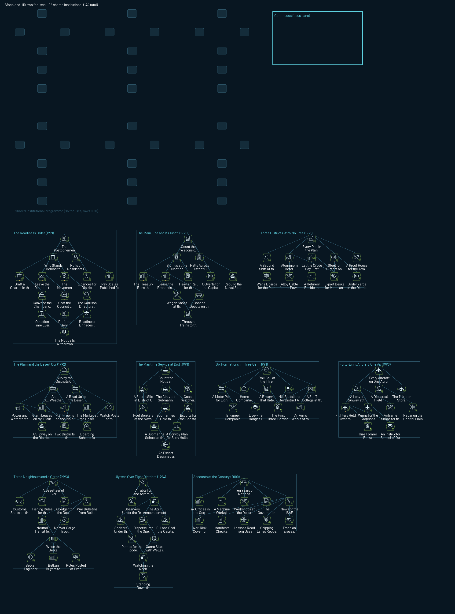
| Branch | Era | Focuses | Filter |
|---|---|---|---|
| The Readiness Order | 1991 | 15 | FOCUS_FILTER_POLITICAL |
| The Main Line and Its Junction | 1991 | 11 | FOCUS_FILTER_INDUSTRY |
| Three Districts With No Free Plot | 1991 | 11 | FOCUS_FILTER_INDUSTRY |
| The Plain and the Desert Corner | 1992 | 11 | FOCUS_FILTER_INTERNAL_AFFAIRS |
| The Maritime Service at District G | 1991 | 10 | FOCUS_FILTER_NAVY_XP |
| Six Formations in Three Garrisons | 1991 | 10 | FOCUS_FILTER_ARMY_XP |
| Forty-Eight Aircraft, One Apron | 1993 | 10 | FOCUS_FILTER_AIR_XP |
| Three Neighbours and a Corner | 1993 | 11 | FOCUS_FILTER_POLITICAL |
| Ulysses Over Eight Districts | 1994 | 10 | FOCUS_FILTER_STABILITY |
| Accounts at the Century | 2000 | 11 | FOCUS_FILTER_RESEARCH |
Offices: Cabinet of the Eight-District Chamber (democratic / conservatism); Standing Council of District Prefects (neutrality / conservatism_na); Directorate of the Three Garrisons (fascism / stratocracy_fascism)
Every four years the election calendar of Sfaenland comes due, and every four years the National Administration prints the same notice for the district halls: the vote is postponed while the country remains on its readiness footing. The clerks have the new notice typeset and waiting. What has changed is that people now ask, loudly and in public, who decided that readiness and elections cannot live side by side.
The awkward part is arithmetic. The party whose name is printed on the government letterhead could fill one seat in every hundred. The national movement, which wants the readiness order kept and given to true believers, draws about as much support as everyone else combined. Nearly all the remainder would rather be governed by the officials and prefects they already know, without a campaign poster in sight. The Administration rules both camps and speaks for neither.
The Administration's lawyers have been asked what the readiness order really requires, and they want time to answer properly. Signing the notice now keeps everything as it was for four more years and spares the cabinet a hard argument. Holding it back until the opinion is ready signals that the question is open, and once a question is open in Sfaenland it rarely closes quietly.
Events: A Notice Due Again; The Opinion on the Readiness Order; A Junction With No Town; Fourteen Plants, Three Districts; Beyond the Railhead; Three Hulls at the Quay; Six Formations Answer; One Field, One Target; Three Neighbours on the Map Table; A War Read in Freight Rates; A Fall Without a Place; A Sky Everyone Watched; Numbers Everyone Can Read; War Over Another Continent
Sources: Mod provenance: Inherited 1991 politics: ruling_party democratic with elections_allowed = no and election_frequency 48; popularities fascism 50, neutrality 48, democratic 1, communism 1; stability and war support 0.5; three research slots; tech_mountaineers and early_fighter among the starting technologies; grand doctrines superior_firepower, new_fleet_in_being and new_operational_integrity. The starting leader is the unnamed National Administration office (SFA_ac_government_office), whose 1991 holder has not been established. The readiness order, the postponement notice and every political answer in this tree are provisional gameplay readings of these settings.; Mod provenance: Geography: 1991 states 10, 28, 51, 65, 77, 189, 198 and 497 (capital), captioned Sfaenland District A, B, C, D, E, F, G and Capital District by the neutral regional labels; victory points Sfaenland Capital Centre (9718) and Logistics Centres 3621 (District A) and 614 (District B). Industry: the Capital District (city, 10 plains provinces) holds 3 civilian and 2 arms plants, the fuel silo and the only air base; District A (forest, hills and mountain, coastal) 2 and 2; District B (large town, forest and plains, coastal) 3 and 2; every shared slot in the three is filled. District G (plains, forest, marsh and one urban province, coastal) holds the 3 dockyards and the naval base on province 2778, with one free slot. Districts C (14 provinces, forest and hills, coastal), D (19 provinces, plains and one urban province, coastal), E (10 provinces, plains and hills) and F (4 provinces, hills and desert) have no buildings, infrastructure or resources. Oil 14, aluminium 13, steel 21 and rubber 6 lie in the Capital District and Districts A and B. Level-2 railways run Capital Centre - province 315 (District E) - District C - Logistics Centre 614, with branches from 315 to Logistics Centre 3621 and through District C to 2778 and on into District G; Districts D and F have no railway. No other place is named and the Earth-template state captions are not used.; Mod provenance: Weather and frontiers. Strategic regions 318 (Districts C and E) record no rain in any month; 319 (Capital District and District F) and 320 (Districts D and G) record heavy rain on up to 40 percent of days; 317 (Districts A and B) has mid-year rains; no region has snow. Land neighbours computed from map/provinces.bmp: Glaceland (its Districts A and F) along Districts A, E and F, with province 3621, Logistics Centre 3621, on the frontier itself; Silvonia (its Districts A and G) along Districts D and F; Luremia (state 231) along District F only. Coasts on Districts A, B, C, D and G.; Provisional gameplay: World-start calibration the tree builds on: role territorial readiness; 8 civilian, 6 military and 3 naval factories; six infantry formations of six battalions and an engineer company, two each at the Capital Centre and Logistics Centres 614 and 3621; 36 fighters and 12 ground-attack aircraft on the capital air base, with 9 fighters and 4 support aircraft in reserve; the Maritime Service of two coastal escorts and one coastal submarine at 2778; 60 convoys; stocks of 1440 infantry equipment, 880 motorized equipment, 24 trains and 288 support equipment; research priority Physical Sustainment. Fiscal profile GDP 160, debt ratio 0.3, collection 0.85, growth 3, inflation 2 is fictional calibration, not canon national accounts or order of battle.; Mod provenance: Neighbour consistency: the Glaceland tree places its four dockyards in its District A beside the Sfaenland frontier and plans a trade road toward Sfaenland; the Luremia tree describes desert traders taking the road from Qesi toward Sfaenland and puts customs on its own side; the Silvonia tree builds a hill road in its District G. This tree builds and governs only on the Sfaenland side, publishes only its own rules, and claims no action, consent or outcome for any neighbour.; Mod provenance: Campaign hooks read, never set: belka_lost_belkan_war, belka_won_belkan_war and belkan_war_is_happening (Belkan War); ac_ucw_isaf_formed, ac_ucw_outcome_isaf_victory and ac_ucw_outcome_erusean_victory (Usean Continental War). Each alternate outcome keeps its own focus.; Official: Date anchor: Scinfaxi-class submarines are announced at a political convention in Cinigrad, Yuktobania. Gate of the submarine announcement focus; no Sfaenland role is claimed.; Official: Date anchor: the International Astronomical Union announces that Ulysses will pass close to the Earth with a chance of impact. Gate of the astronomers focus.; Official: Date anchor: the Belkan War breaks out. Gate of the war bulletins focus; Sfaenland takes no part.; Official: Date anchor: a treaty is signed in Lumen and the Belkan War ends. Earliest date of the stand-down focus, which also waits until the mod no longer records the war as happening.; Official: Date anchor: the President of the FCU announces that Ulysses will impact the Earth. Gate of the announcement focus; where fragments fall is never stated.; Official: Former top pilots of the Belkan Air Force are hired by various countries as aggressor squadrons. Date gate of the aggressor focus; whether Sfaenland hires any is a player choice, not a claim.; Official: Date anchor: Ulysses passes through the Roche limit of the Earth. Gate of the Roche passage focus; no damage in Sfaenland is claimed.; Official: Erusea invades San Salvacion and uses the Stonehenge railguns as anti-air batteries. Background to the Usean lessons focus only.; Official: Date anchor: the FCU demands Erusean withdrawal and establishes the ISAF. The focus that reacts waits for the mod flag ac_ucw_isaf_formed and claims no Sfaenland part in the war.; Official: The ISAF attacks Erusean forces anchored at Comberth Harbor. Background to the Usean lessons focus only; no Sfaenland part is claimed.; Official: Farbanti falls and the Continental War ends with the ISAF accepting surrender. Background to the reopened lanes focus, which waits for the mod flag ac_ucw_outcome_isaf_victory; the Erusean victory branch waits for ac_ucw_outcome_erusean_victory instead.; Provisional gameplay: All Sfaenland focuses, ideas, offices, buildings, flags, decisions and events in this spec. No named people; offices are collective and unnamed; no border, core, war, annexation or faction effects.
103 own focuses, 10 branches, 36 shared institutional focuses, 12 events, 89 ideas, 4 offices.
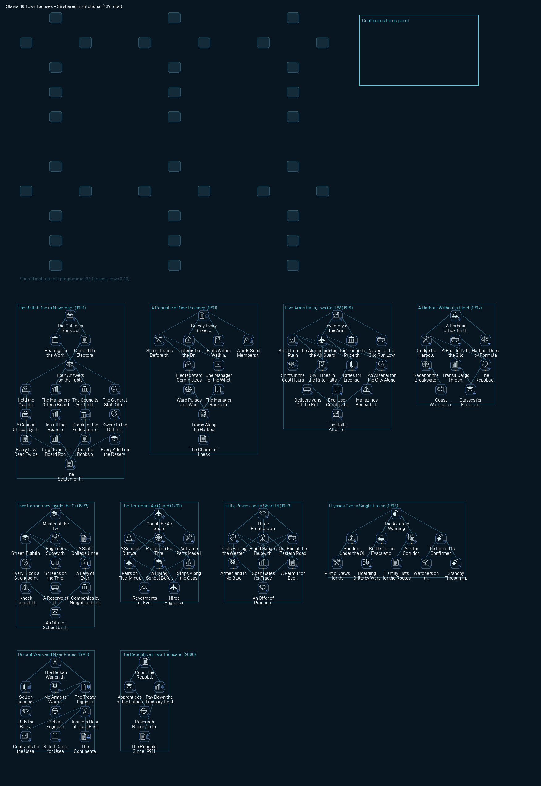
| Branch | Era | Focuses | Filter |
|---|---|---|---|
| The Ballot Due in November | 1991 | 17 | FOCUS_FILTER_POLITICAL |
| A Republic of One Province | 1991 | 11 | FOCUS_FILTER_INTERNAL_AFFAIRS |
| Five Arms Halls, Two Civil Works | 1991 | 13 | FOCUS_FILTER_INDUSTRY |
| A Harbour Without a Fleet | 1992 | 9 | FOCUS_FILTER_NAVY_XP |
| Two Formations Inside the City | 1992 | 11 | FOCUS_FILTER_ARMY_XP |
| The Territorial Air Guard | 1992 | 9 | FOCUS_FILTER_AIR_XP |
| Hills, Passes and a Short Plain | 1993 | 8 | FOCUS_FILTER_POLITICAL |
| Ulysses Over a Single Province | 1994 | 10 | FOCUS_FILTER_STABILITY |
| Distant Wars and Near Prices | 1995 | 10 | FOCUS_FILTER_WAR_SUPPORT |
| The Republic at Two Thousand | 2000 | 5 | FOCUS_FILTER_POLITICAL |
Offices: Federal Council of the Slavian Federation (democratic / social_democracy); Board of Managers of the Republic (neutrality / oligarchism); Federative Council of the Works (communism / democratic_socialism); Defence Board of the Slavian Republic (neutrality / stratocracy)
A printed electoral calendar hangs in the Administration's cabinet room, issued in 1987 and never replaced. Someone has ringed the ninth of November 1991 in red ink. Under the inherited four-year rule, that is when the Slavian Republic should next vote. Nobody in the room admits to the ink, and nobody has taken the calendar off its nail.
Since that last vote the Administration has governed by ordinary decree, and most of Lhesk has let it. Seven in ten voters still back the non-aligned label it governs under. Almost a quarter vote communist, most of them on the floors of the arms halls and the docks. A handful follow the nationalists and hardly anyone the democrats. Public order is brittle, yet readiness to fight for the city is very high, a mixture each minister explains in a different way.
Nothing has to be settled today, but the date is only months away and editors can read a calendar too. The cabinet can extend its own mandate by quiet decree, announce a public review of how the republic should be governed, or send officials into the shift-change canteens to ask the workforce directly. The last course will begin an argument the Administration cannot finish on its own.
Events: The Calendar in the Cabinet Room; Questions Until Dawn; A Survey Walked in One Season; Clipboards in the Arms Halls; One Counter at Six in the Morning; The Whole Army on One Field; A Thin Folder of Frontiers; Nowhere Inland to Go; A Long Night of Radios; Premiums Before Headlines; The Usean War Reaches the Quay; One Volume, Two Decades of Figures
Sources: Mod provenance: Inherited 1991 politics: ruling_party neutrality with last_election 1987.11.9, election_frequency 48 and elections_allowed = no; popularities neutrality 70, communism 23, fascism 6, democratic 1; stability 0.4 and war support 0.90; three research slots; tech_mountaineers, early_fighter and basic_train among the starting technologies. The starting leader is the unnamed National Administration office (SLA_ac_government_office, centrism_na), whose description says its 1991 holder has not been established. The tree never names a holder. The overdue ballot of November 1991 is read from the inherited calendar, not from any canon source.; Mod provenance: Country names per party: Slavian Republic (neutrality), Slavian Federation (democratic), Slavian Federative Socialist Republic (communism); adjective Slavian. The federal path takes the democratic name and the works path the communist name; the managers and defence paths keep the Republic. No claim, core, war or annexation follows from any path.; Mod provenance: Geography: one 1991 state, 133, localised Lhesk (capital; state_category large_city, eight shared slots, all filled by 5 arms factories, 2 industrial complexes and 1 fuel silo; infrastructure 3; air base 1; no radar). One province, 11348, coastal plains, with naval base 1, a supply node and victory point Lhesk, value 20. Resources oil 4, aluminium 6, rubber 3, steel 9. Strategic region 235: heavy rain likely from January to May, almost none from June to September with highs of 36 to 37, mud in every month and light snow possible from December to February. Land neighbours computed from map/provinces.bmp: VLK (state 397, hills 8257) to the west; SET (state 356, mountains 2455 and 559) to the north and north-east and SET (state 362, plains 4443) on a very short eastern contact; sea province 10632 to the south. Compass words come from province centroids. No other place is named; neighbour state captions are not used.; Mod provenance: Neighbours as inherited: Valka ruled by its democratic party with elections suspended and popularity neutrality 48, fascism 50; Seterano with five 1991 states. Neighbour consistency: the Seteranoan tree places Slavia to its west beyond its capital plain, touches it only through its own mountain district and capital plain, rebuilds only its own side of the western road and leaves the far side for Slavia to decide. This tree builds and governs only on the Slavian side, makes unilateral offers, and never asserts a neighbour response.; Provisional gameplay: World-start calibration the tree builds on: role single-province territorial air guard; 2 civilian and 5 military factories, no dockyard; two infantry formations of four battalions, each with an engineer company, at province 11348; 12 fighters at state 133 with 4 in reserve; combat navy deliberately absent (territorial defence and merchant receiving only); 60 convoys; one fuel silo; stocks of 800 infantry equipment, 560 motorized equipment, 160 support equipment and 24 trains; research priority Physical Sustainment. Fiscal figures (GDP 84, debt ratio 0.3, collection 0.85, growth 3, inflation 2) and the executive_office institution at capacity 40 are fictional calibration, not canon national accounts.; Official: Date anchor: the IAU announces that Ulysses will pass close to the Earth and may strike it. Gate of the asteroid branch; no Slavian role is claimed.; Official: Date anchor: the Belkan War breaks out. Gate of the distant-wars branch; Slavia takes no part.; Official: Date anchor: a treaty is signed in Lumen and the Belkan War ends. Gate of the treaty focus.; Official: Date anchor: the FCU announces that Ulysses will impact the Earth. Gate of the impact focus; where fragments fall is never stated.; Official: Former top pilots of the Belkan Air Force are hired by various countries as aggressor squadrons. Date gate and premise of the aggressor focus; nobody is named and no Slavian hire is asserted as fact.; Official: Date anchor: Ulysses passes through the Roche limit of the Earth. Gate of the Roche night focus and event; no damage in Slavia is claimed or denied.; Official: Erusea invades San Salvacion and seizes Stonehenge. Background to the Usean war event only.; Official: Date anchor: the FCU establishes the ISAF. Gate of the Usean war focus, which also waits for the mod global flag ac_ucw_isaf_formed; no Slavian part is claimed.; Official: Farbanti falls, Erusea surrenders and the Continental War ends. Background to the closing war focus, which waits for the mod outcome flag ac_ucw_outcome_isaf_victory instead of assuming this ending.; Mod provenance: Campaign hooks read only, never set: belka_won_belkan_war and belka_lost_belkan_war (events/Belka.txt); ac_ucw_isaf_formed and ac_ucw_outcome_isaf_victory (common/scripted_effects/ac_ucw.txt). Each reaction sits on a leaf or a short closing chain, so no outcome blocks the rest of the tree.; Provisional gameplay: All Slavian focuses, ideas, offices, buildings, flags, decisions and events in this spec. No named people; offices are collective and unnamed; no border, core, war, annexation or faction effects. Every shared slot in Lhesk is already filled, so buildings are limited to infrastructure (two levels), air base and radar station levels in the capital state.
129 own focuses, 12 branches, 36 shared institutional focuses, 16 events, 68 ideas, 4 offices.

| Branch | Era | Focuses | Filter |
|---|---|---|---|
| The Suspended Calendar | 1991 | 15 | FOCUS_FILTER_POLITICAL |
| The Scattered Districts | 1991 | 11 | FOCUS_FILTER_INTERNAL_AFFAIRS |
| The Merchant Register | 1991 | 11 | FOCUS_FILTER_INDUSTRY |
| Oil and Steel of the Main Island | 1991 | 11 | FOCUS_FILTER_INDUSTRY |
| The Dockyard District | 1991 | 10 | FOCUS_FILTER_NAVY_XP |
| A Fleet Kept in Being | 1991 | 10 | FOCUS_FILTER_NAVY_XP |
| Wings over the Narrow Sea | 1991 | 10 | FOCUS_FILTER_AIR_XP |
| Across the Narrow Sea | 1991 | 10 | FOCUS_FILTER_WAR_SUPPORT |
| Hills, Marshes and Harbours | 1991 | 10 | FOCUS_FILTER_ARMY_XP |
| A Rock Called Ulysses | 1994 | 10 | FOCUS_FILTER_STABILITY |
| The Maritime Polytechnic | 1993 | 9 | FOCUS_FILTER_RESEARCH |
| A Distant War, a Near Sea | 2002 | 12 | FOCUS_FILTER_WAR_SUPPORT |
Offices: Cabinet of the Restored Chamber (democratic / liberalism); Union Council of the Districts (neutrality / conservatism_na); Imperial Directorate (fascism / ultranationalism); Standing Administration of the Republic (democratic / centrism)
The National Administration begins 1991 the way it ended the previous year: governing by ordinance from offices on the capital plain, with no date set for the next election. Its own party, the one that still calls the country a republic, polls almost nobody. The ferries run, the ports collect their dues and the fleet keeps its moorings, but nobody can say on whose mandate any of it happens.
Two great movements fill the space the administration leaves empty. The imperial movement, which wants a Wellowan Empire with one flag and one fleet, claims about half the electorate and fills the port-town halls with petitioners. The union camp, which wants the scattered districts bound together as a United Kingdom under a crown held by their own council, claims nearly all the rest. Both say the administration is a caretaker that has forgotten it was meant to leave.
Senior officials have prepared a statement for the new year. It can promise that the question of government will be settled in public, with hearings in every district and a published record, or it can promise only continuity and ask the country to wait. Neither promise costs anything today. Both will be quoted against the administration for years.
Events: An Administration Without a Calendar; The Ferry Season Report; Nine Hundred Hulls; The Ghost Hulls; The Western Fields; Six Slips, Three Masters; Belka Sells Its North; War Across the Narrow Sea; The First Month of the Watch; Light over the Southern Mountains; One Army, Sixteen Districts; A Rock with a Name; Instructors for Hire; A Relief Convoy Sails; Insurers Price a Distant War; Fifteen Years of the Register
Sources: Mod provenance: Inherited Wellow history: capital state 247; ruling_party democratic with elections_allowed = no; popularities neutrality 48, fascism 50, democratic 1, communism 1; stability and war support 0.5; leader is the unnamed WEL_ac_government_office (National Administration), whose 1991 holder is not established. The tree reads these numbers as political pressure and does not claim when or why the election calendar stopped.; Mod provenance: Country names per party: Republic of Wellow (democratic), Wellowan Empire (fascism), United Kingdom of Wellow (neutrality and monarchism), Union of Wellow (communism); adjective Wellowan. The four political answers follow these names; offices are collective and unnamed.; Mod provenance: Geography: 1991 states 5, 17, 96, 100, 131, 175, 244, 245, 246, 247 (capital), 248, 250, 253, 255, 264 and 266 on the wellow continent. States 5 and 244 to 266 form one contiguous main island; 17, 96, 100 and 131 are separate island districts to the west and 175 a small islet to the southeast. No land neighbours; the nearest foreign coast is Belka to the south, then FATO and Gebet, computed from map/provinces.bmp. The capital state is the only inland state. Terrain (hills, marsh, mountain, plains) comes from map/definition.csv. District labels are provisional and are not used as place names.; Mod provenance: Starting economy and forces: 16 civilian, 8 military and 6 dockyard levels (the six dockyards all in state 253); air bases in states 5 and 247; a fuel silo in the capital; oil 44 and steel 38 from states 5, 247 and 250; 932 convoys; about ten infantry formations, a coastal escort and submarine navy, a small fighter and support air arm; grand doctrines superior_firepower, fleet_in_being and operational_integrity; role dispersed maritime trade. These are gameplay calibration, not canon national accounts.; Official: Date anchor: Belka sells northern territory to FATO and cedes northern islands and the Great Lakes region to Osea. Used for the strait branch opening; no Wellowan role is claimed.; Official: Date anchor: Belkan borders are redrawn. Used only as the earliest date of a study focus.; Official: Date anchor: the IAU announces that Ulysses may strike the Earth. Wellowan preparations are gameplay.; Official: Date anchor: the Belkan War breaks out. Wellow is not a party; its posture is gameplay.; Official: Date anchor: the Belkan Army uses nuclear devices in the Waldreich Mountains. The Wellowan fallout watch is gameplay and also requires the mod global flag belka_dropped_nukes.; Official: Date anchor: the treaty signed in Lumen ends the Belkan War.; Official: Date anchor: the FCU announces that Ulysses will strike the Earth.; Official: Date anchor: former top Belkan Air Force pilots are hired by various countries as aggressor squadrons. The Wellowan offer is gameplay; Wellow is not claimed to be one of those countries.; Official: Date anchor: Ulysses passes through the Roche limit.; Official: Date anchor: Osea, Emmeria and other nations join sanctions against Estovakia. Wellow is not claimed among them; the registry choice is gameplay.; Official: Date anchor: the FCU demands that Erusea withdraw from the railgun complex and San Salvacion, and the ISAF is established.; Official: Date anchor: Farbanti falls and the Continental War ends; used for the closing review.; Provisional gameplay: All Wellowan focuses, ideas, offices, decisions, buildings, flags and events in this spec. No named people; offices are collective and unnamed; no border, core, war, annexation or faction effects. Campaign hooks read only mod global flags (belka_dropped_nukes, belka_lost_belkan_war, belka_won_belkan_war).